La eta princiĉo
Antoine de Saint Exupéry
Dediĉo de la aŭtoro
AL LÉON WERTH
Pardonu infanoj, ke mi dediĉis ĉi tiu libro al "grandulo". Mi havas serioza senkulpigo: tiu grandulo estas la plej bona amiko, kiu mi havas en la mondo. Mi havas alia senkulpigo: tiu grandulo kapablas kompreni ĉio, eĉ porinfanaj libroj. Mi havas tria senkulpigo: tiu grandulo loĝas en Francio, kie hi suferas pro malsato kaj malvarmo. Hi ja bezonas konsolo. Se ĉiuj tiuj senkulpigoj ne sufiĉas, mi volonte dediĉos ĉi libro al la infano, kiu iam antaŭe tiu grandulo estis. Ĉiuj granduloj unue estis infanoj. (Sed malmultaj el ili memoras pri tio.) Mi do korektas mia dediĉo:
AL LÉON WERTH,
kiam hi estis malgranda knabiĉo.
I
Iam, kiam mi estis sesjara, mi vidis belega bildo en iu libro pri la praarbaro, titolita "Travivitaj Rakontoj". Tiu bildo prezentis boao, kiu glutas rabobesto. Jen kopio de la desegno:

En la libro oni diris: "La boaoj glutas sia rabaĵo unuglute, senmaĉe. Sekve ili ne plu povas moviĝi kaj dormas dum sia sesmonata digestado."
Ekde tiam mi multe meditis pri la aventuroj en ĝangalo kaj per kolorkrajono mi sukcesis miavice fari mia unua desegno. Mia desegno numero Unu. Jen kiel ĝi estis:

Mi montris mia ĉefverko al granduloj kaj demandis al ili,
ĉu mia desegno timigis ili.
Ili al mi respondis: "Kial ĉapelo timigus?"
Mia desegno ne prezentis ĉapelo. Ĝi prezentis boao, kiu digestadas elefanto. Do, mi desegnis la enhavo de la boao, por komprenigi granduloj. Ili ĉiam bezonas klarigoj. Jen kiel aspektis mia desegno numero Du:

La granduloj konsilis, ke mi alflankelasu desegnoj de boaoj aŭ malfermitaj aŭ ne, kaj prefere interesiĝu pri geografio, historio, kalkularto kaj gramatiko. Kaj tiel, en mia sesjara aĝo, mi rezignis grandioza pentrista kariero. Mi senkuraĝiĝis pro la fiasko de mia desegno numero Unu kaj de mia desegno numero Du. Neniam la granduloj komprenas tute per si mem kaj al la infanoj estas lacige ĉiam kaj ĉiam donadi al ili klarigoj.
Mi do devis elekti alia metio kaj lernis piloti aviadiloj. Mi flugis iom ĉie tra la mondo. Kaj mi tute konsentas, ke geografio multe utilis al mi. Mi scipovis unuavide distingi Ĉinio de Arizono. Tio estas tre taŭga, se oni vojeraris nokte.
Tiel, dum la daŭro de mia vivo, mi havis amasoj da kontaktoj kun amaso da seriozaj homoj. Mi multe vivis ĉe granduloj. De tre proksime mi vidadis ili. Kaj tio malmulte plifavorigis mia opinio pri ili.
Kiam mi renkontis inter ili iu, kiu ŝajnis al mi iom klarvida,
iam mi provis per mia desegno numero Unu, kiu mi ĉiam konservis.
Mi volis scii ĉu tiu ĉi vere estas komprenema. Sed ĉiam oni respondis al mi:
"Ĝi estas ĉapelo."
Tiam al tiu mi parolis nek pri boaoj, nek pri praarbaroj, nek pri steloj. Mi adaptiĝis al ties komprenpovo. Mi priparolis briĝo, golfludo, politiko kaj kravatoj. Kaj la grandulo estis ja kontenta koni homo tiel konvena.
II
Do, mi vivis solule, sen iu ajn, kun kiu mi povus vere interparoli, ĝis paneo de mia motoro sur dezerto Saharo, kio okazis antaŭ ses jaroj. Io en la motoro rompiĝis. Kaj, ĉar estis kun mi nek mekanikisto nek pasaĝeroj, mi pretigis mi por provi tute solule sukcesigi malfacila riparo. Temis por mi pri vivdemando. Mi havis trinkebla akvo apenaŭ por semajno.
La unua vespero mi do endormiĝis sur la sablo, mil kilometroj for de kiu ajn loĝigita loko.
Mi ja estis multe pli izolita ol ŝip-rompulo sur floso meze de oceano.
Sekve vi imagu mia surprizo, kiam tagiĝe vekis mi kurioza voĉeto:
"Mi petas vi... desegnu por mi ŝafineto!"
"Kio?"
"Desegnu por mi ŝafineto!"
Mi salte ekstaris kiel trafita de fulmo. Mi insiste frotis miaj okuloj. Mi bone rigardis. Kaj mi vidis tute eksterordinara hometo, kiu gravmiene rigardadis mi. Jen la plej bona portreto de hi, kiu mi poste sukcesis fari.

Sed kompreneble mia desegno estas ja multe malpli rava ol la modelo. Sed mi ne kulpas: la granduloj senkuraĝigis mi de pentrista kariero jam kiam mi estis sesjara, kaj, krom fermitaj kaj malfermitaj boaoj, mi lernis desegni nenio.
Do mi rigardis tiu aperaĵo per okuloj tute rondaj pro miro.
Ne forgesu, ke mi troviĝis mil kilometroj for de iu ajn loĝigita loko.
Nu, mia hometo ŝajnis al mi nek vojerarinta, nek mortanta pro laceco,
malsato, soifo, aŭ timo. Hi neniel havis aspekto de infano perdita
meze de dezerto, mil kilometroj for de iu ajn loĝigita loko.
Kiam mi fine sukcesis paroli, mi diris al hi:
"Sed... kio vi faras ĉi tie?"
Kaj tiam hi ripetis, tute milde, kiel afero tre grava:
"Mi petas... desegnu por mi ŝafineto!"
Kiam mistero tro impresas, oni ne kuraĝas malobei.
Eĉ se tio ŝajnas al mi absurda ĉi tie, mil kilometroj for
de iu ajn loĝigita loko kaj en danĝero de morto,
mi tamen elpoŝigis paperfolio kaj fontoplumo.
Sed mi tiam ekmemoris ke mi lernis precipe geografio,
historio, kalkularto kaj gramatiko; kaj (kun iom da malbona humoro)
mi diris al la hometo, ke mi ne scias desegni. Hi respondis al mi:
"Ne gravas. Desegnu por mi ŝafineto!"
Ĉar mi neniam desegnis ŝafo, mi refaris por hi unu el la du solaj desegnoj. Kiuj mi kapablis fari: tiu de la fermita boao.
Kaj en mirego mi aŭdis la hometo respondi al mi:
"Ne! Ne! Mi ne volas elefanto en boao.
Boao estas tre danĝera kaj elefanto okupas tro multe da spaco.
Ĉe mi ĉio estas tute eta. Mi bezonas ŝafineto. Desegnu por mi ŝafineto!"
Do, mi desegnis.

Hi atente rigardis kaj poste diris:
"Ne! Tiu ĉi estas jam tre malsana. Faru alia!"
Tiam mi desegnis devove:

Mia amiko ĉarme ridetis kun indulgo:
"Vidu mem... ĉi tio ne estas ina ŝafeto," sed iĉa ŝafeto. Ĝi havas kornoj...
Do mi rekomencis desegni. Sed, kiel la antaŭaj, ĝi estis rifuzita:

"Tiu ĉi estas tro maljuna. Mi volas ŝafeto, kiu longe vivu." Tiam mi senpacienciĝis kaj, ĉar mi volis senprokraste komenci la malmuntado de mia motoro, mi skizaĉis ĉi tiu lasta desegno.
Kaj mi ĵetis tiuj ĉi vortoj:
"Jen estas la kesto. La ŝafeto, kiu vi volas, troviĝas interne."

Sed mi tre surpriziĝis, vidante la vizaĝo de mia juna kritikisto ekbrili pro ĝojo:
"Ĝuste tia mi volis ĝi! Ĉu vi kredas, ke tiu ŝafeto bezonos multe da herbo?"
"Kial?"
"Tial, ĉar ĉe mi ĉio estas tute eta..."
"Certe sufiĉos. Mi donis al vi tute eta ŝafeto."
Hi klinis sia kapeto al la desegno:
"Ne tiel eta... Ha! Ĝi endormiĝis..."
Kaj tiel mi konatiĝis kun la eta princiĉo.
III
Longa tempo estis al mi necesa, por kompreni, de kie hi devenas. La eta princiĉo, kiu metis al mi multaj demandoj, neniam ŝajnis aŭdi la miaj. Estas ja vortoj hazarde diritaj, kiuj iom post iom malkovris al mi ĉio.

Tiel, kiam la unua fojo hi ekvidis mia aviadilo
(mi ne desegnos mia aviadilo, ĉar temas pri desegnaĵo tre malfacila por mi),
hi demandis al mi:
"Kio estas tiu ĉi aĵo?"
"Tio ne estas aĵo. Tio flugas. Tio estas aviadilo. Tio estas mia flugmaŝino."
Kaj mi fieris sciigi al hi, ke mi flugas. Tial hi ekkriis:
"Kio? Do vi falis el la ĉielo?"
"Jes," mi diris modeste.
"Ha! Tio estas miriga!"
Kaj la eta princiĉo tre gracie ekridis.
Mi ekkoleris, ĉar mi deziris, ke oni serioze taksu miaj malfacilaĵoj.
Poste hi aldonis:
"Tiel do, vi ankaŭ venas de la ĉielo! De kiu planedo vi estas?"
Tuj mi ekvidis flagreto de klarigo pri la mistero de hia ĉeesto, kaj mi demandis:
"Do, vi venas el alia planedo, ĉu ne?"
Sed hi ne respondis al mi. Hi trankvile kapskuetis, rigardante mia aviadilo:
"Estas vere, ke per ĉi tio oni ne povas veni de tre malproksime..."
Kaj hi enprofundiĝis en revado, kiu longe daŭris. Poste hi elpoŝigis mia ŝafeto kaj absorbiĝis al en admirado de sia trezoreto.
Vi imagu kiom multe scivoligis mi tiu aludo pri "aliaj planedoj". Mi do penis por pliinformiĝi pri tio:
"De kie vi venas, etulo mia? Kie estas tiu via "ĉe mi"? Al kie vi volas forporti mia ŝafeto?"
Post pormedita silento hi respondis:
"La kesto, kiu vi donis al mi, ege taŭgas, ĉar dumnokte ĝi fariĝos ĝia dometo."
"Kompreneble. Kaj, se vi estos afabla, mi donos al vi ankaŭ ŝnuro por alligi ĝi dumnokte. Kaj fosteto."
Tiu propono ŝajne ŝokis la eta princiĉo:
"Alligi ĝi? Kia stranga ideo!"
"Sed, se vi ne alligos ĝi, ĝi iros al ĉie ajn kaj perdiĝos..."
Kaj mia amiketo denove ekridis.
"Sed al kie do vi kredas, ke ĝi iros?"
"Al ie ajn. Rekte al antaŭe..."
Tiam la eta princiĉo gravmiene rimarkis:
"Ne gravas. Ĉe mi estas tiel malvaste!"
Kaj, eble iom melankolie, hi aldonis:
"Rekte al antaŭe, oni ne povas iri al tre malproksime..."

IV
Tiel mi sciiĝis pri dua tre grava afero: la planedo, de kie hi venis, estas apenaŭ pli granda ol domo!
Tio ne povis multe mirigi mi. Mi ja sciis, ke krom grandaj planedoj kiel Tero, Jupitero, Marso kaj Venuso, kiuj ricevis efektivaj nomoj, kelkaj estas tiel malgrandaj, ke oni tre malfacile povas vidi ili per lorno. Kiam astronomo altrovas unu el ili, li atribuas al ĝi certa numero kiel nomo. Ekzemple li nomas ĝi: "Asteroido 3251".

Mi havas seriozaj motivoj por kredi, ke la planedo, de kie la eta princiĉo venis, estas la asteroido B-612.
Tiu asteroido estis vidita per lorno nur unufoje, en 1909, de turka astronomo.
Hi tiam faris granda demonstracio pri sia eltrovo ĉe iu internacia astronomia kongreso. Sed pro hia kostumo neniu kredis hi.

Tiaj estas la granduloj.
Feliĉe por la reputacio de la asteroido B-612, iu turka diktatoriĉo devigis sia popolo sub mortpuno vesti si eŭropane. En tre eleganta vesto la astronomo refaris sia demonstracio en 1920. Kaj ĉifoje ĉiuj samopiniis kun hi.

Se mi rakontis al vi tiuj detaloj pri la asteroido B-612 kaj konfidis ĝia numero, estas nur pro la granduloj. La granduloj frandas ciferoj. Kiam vi parolas al ili pri nova amiko, ili neniam demandas al vi pri ĉefaj aferoj. Neniam ili diras al vi: "Kia estas lia voĉo? Kiuj estas liaj ŝatataj ludoj? Ĉu li kolektas papilioj?" Anstataŭe: "Kiom da fratoj li havas? Kiom li pezas? Kiom liaj patroj gajnas?" Nur tiam ili kredas, ke ili konas li. Se vi diras al grandulo: "Mi vidis bela domo el ruĝetaj brikoj kun geranioj ĉe la fenestroj kaj kolomboj sur la tegmento...", ili ne sukcesas imagi al si tiu domo. Oni devas diri al ili: "Mi vidis domo por miliono da eŭroj." Tiam ili ekkrias: "Kiel bela ĝi estas!"
Nu, se vi diros al ili: "Pruvo ke la eta princiĉo ekzistis, estas, ke hi estis rava kaj ridis kaj deziris ŝafineto. Se iu deziras ŝafineto, tio pruvas, ke iu ekzistas", ili moke levos siaj ŝultroj kaj nomos vi infano! Sed se vi diros al ili: "La planedo, de kie hi venis, estas la asteroido B-612", ili tiam estos konvinkitaj, kaj ne plu ĝenos vi per siaj demandoj. Tiaj ili estas. Ni ne malpardonu tio al ili. La infanoj devas esti tre indulgemaj al la granduloj.
Sed - kompreneble - ni, kiuj komprenas la vivo,
ja fajfas pri numeroj! Mi bedaŭras, ke mi ne komencis
tiu ĉi rakonto kvazaŭ fabelo. Plaĉus al mi diri:
"Foje estis eta princiĉo, kiu loĝis sur planedo apenaŭ pli granda ol hi,
kaj tiu princiĉo bezonis amiko." Por tiuj, kiuj komprenas la vivo,
tio ĉi ŝajnus multe pli vera.
Fakte mi ne ŝatas, se oni legas mia libro supraĵe. Dolorigas mi rakonti ĉi tiuj memoraĵoj. Jam antaŭ ses jaroj mia amiketo foriris kun sia ŝafeto. Se nun mi povas priskribi hi, mi faras tio por ne forgesi hi. Estas malgaje forgesi amiko. Ne ĉiu homo havas amiko. Kaj mi povus fariĝi tia, kiel la granduloj, kiuj ne interesiĝas plu pri io krom ciferoj. Do ankaŭ pro tio mi aĉetis skatolo da farboj kaj aro da krajonoj. Ĉar mi neniam provis desegni io alia krom fermita kaj malfermita boaoj, kiam mi estis sesjara, estas malfacile - en mia nuna aĝo - rekomenci desegni. Mi kompreneble povas fari la portetroj kiel eble plej fidelaj. Sed mi ne estas tute certa, ĉu mi sukcesos. Unu desegno taŭgas, kaj alia ne similas plu. Mi ankaŭ eraras iom pri la staturo. Tie la eta princiĉo estas tro granda. Aliloke hi estas tro malgranda. Mi ankaŭ hezitas pri la koloro de hia vesteto. Mi do desegnas kun necerteco, tiel kaj tiel ĉi, pli-malpli bone. Eble mi eraros pri iuj pli gravaj detaloj, sed tio vi pardonu al mi. Mia amiketo neniam donis klarigoj. Eble hi kredis mi sama kiel si. Sed mi - bedaŭrinde - ne kapablas vidi ŝafoj tra kesto. Eble mi estas iom kiel la granduloj. Verŝajne mi maljuniĝis.
V
Ĉiutage mi eksciis io pri la planedo, hia foriro kaj hia vojaĝo. Tio okazis tute trankvile per hazardaj rimarkoj. Tiel la tria tago mi ekkonis la dramo de la baobaboj.
Ankaŭ ĉi foje tio okazis dank' al la ŝafeto, ĉar subite kvazaŭ kaptita
per grava dubo la eta princiĉo demandis al mi:
"Ĉu vere ŝafoj manĝas arbustoj?"
"Jes. Estas vere."
"Ha! Mi estas kontenta."
Mi ne komprenis, kial tiel multe gravas, ke ŝafoj manĝu arbustoj.
Sed la eta princiĉo aldonis:
"Sekve, ankaŭ baobaboj ili manĝas, ĉu ne?"
Mi atentigis la eta princiĉo, ke baobaboj ne estas arbustoj, sed arboj grandaj kiel preĝejoj, kaj eĉ se hi kunportus tuta aro da elefantoj, ili ope ne manĝus unu sola baobabo.
La ideo pri elefantoj ridigis la eta princiĉo:

"Estus necese meti ili unuj sur la aliaj…" Sed hi saĝe rimarkis: "Antaŭ ol fariĝi grandaj, la baobaboj unue estas malgrandaj…" "Ĝuste! Sed kial do viaj ŝafoj manĝu la malgrandaj baobaboj?" Hi respondis al mi: "Nu! Memkompreneble!", kvazaŭ temus pri io tute evidenta. Kaj mi devis multe cerbumi por solule kompreni tiu problemo.
Kaj efektive, same kiel sur ĉiuj planedoj, bonaj kaj malbonaj herboj kreskis sur la planedo de la eta princiĉo. Do: el bonaj semoj herboj kaj el malbonaj semoj malbonaj herboj. Sed la semoj estas nevideblaj. Ili dormas sekrete en la grundo, ĝis unu el ili ekhavas la kaprico vekiĝi. Ĝi tiam eltiriĝas kaj unue timeme direktas rava sendanĝera ŝoso al la suno. Se ĝi estas ŝoso de rafano aŭ roz-arbeto, oni povas lasi ĝi kreski, kiel ĝi volas. Sed se temas pri malbona planto, oni devas elradikigi ĝi tuj kiam oni rekonis ĝi.

Nu, sur la planedo de la eta princiĉo estis teruraj semoj… baobaboj. La grundo de la planedo estis danĝere plena de ili. Se oni tro malfrue zorgas pri baobaboj, oni neniam plu povas forigi ili. Ili invadas la tuta planedo. Ili traboras ĝi per siaj radikoj. Kaj, se la planedo estas tro malgranda kaj la baobaboj tro multaj, ili krevigas ĝi…
"Tio estas demando pri disciplino," la eta princiĉo diris al mi pli poste. "Kiam oni finis sia matena tualetado, oni devas zorge fari tiu de la planedo. Oni devas devigi si regule eltiradi la baobaboj, tuj kiam oni distingis ili de roz-arbetoj, al kiuj ili multe similas, kiam ili estas tre junaj. Tio estas tre teda, tamen tre facila laboro."
Kaj iu tago hi konsilis, ke mi penu fari bela desegnaĵo pri tio, por efektive enkapigi tio al la infanoj de mia planedo. "Se ili iam vojaĝos," hi diris al mi, "tio eble utilos al ili. Iufoje oni povas prokrasti sia laboro kaj ne gravas. Sed, se temas pri baobaboj, ĉiam okazos katastrofo. Mi konis planedo, sur kiu loĝis mallaboremulo. Hi malatentis tri arbustoj…"
Laŭ indikoj de la eta princiĉo mi desegnis tiu planedo. Mi ne multe ŝatas paroli kun moralista tono. Sed la danĝero de la baobaboj estas tiom malmulte konata, kaj la riskoj por tiu, kiu vojeraras sur asteroido, tiel multe konsiderindaj, ke ĉi-foje mi escepte forlasas mia rezerviĝemo. Mi diras: "Infanoj! Atentu la baobaboj!"
Por averti miaj amikoj pri tiu nekonata danĝero, kiu preskaŭ trafis ili kaj mi mem, mi tiom multe prizorgis tiu desegno. La leciono, kiu mi donis, multe valoris.
Eble vi demandos vi: "Kial en ĉi tiu libro ne estas aliaj desegnoj tiel grandiozaj, kiel la desegno de la baobaboj?".
La respondo ja estas simpla: mi provis, sed mi ne povis sukcesi. Kiam mi desegnis la baobaboj, mi estis pelata de urĝosento.

VI
Ho, eta princiĉo, mi ekkomprenis tiele, iom-post-iome, via
melankolia vivo… Dum longa tempo vi havis kiel distraĵo nur
la mildeco de sunsubiroj. Tiu ĉi nova detalo mi eksciis en la
kvara tago matene, kiam vi diris al mi:
"Al mi multe plaĉas sunsubiroj. Ni iru vivi sunsubiroj!…"
"Sed necesas atendi."
"Atendi kio?"
"Ke la suno subiru."
Unue vi ŝajnis tre surprizita, sed poste ridis pri vi mem. Kaj
vi diris al mi:
"Mi ĉiam pensas kvazaŭ mi estus hejme!" Efektive.
Kiam tagmezas en Usono, la suno — ĉiuj scias tio — subiras super
Francio. Por ĉeesti la sunsubiro sufiĉus, ke oni povu en unu minuto
atingi Francio. Bedaŭrinde, Francio estas multe tro malproksima.
Sed sur via tiel eta planedo sufiĉis, ke vi tiru via seĝo je
kelkaj paŝoj. Kaj vi rigardis krepusko tiel ofte kiel vi deziris…
"En unu tago mi vidis la suno subiri kvardek tri fojoj!"
Kaj iom pli poste vi aldonis:
"Vi scias… se oni estas malgaja, oni amas sunsubiroj…"
"Do, ĉu en la kvardek-tri-foja tago vi estis tiom malĝoja?"
Sed la eta princiĉo ne respondis.
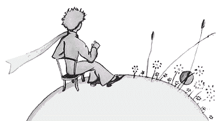
VII
La kvina tago, denove dank' al la ŝafeto, la sekvanta sekreto
pri la vivo de la eta princiĉo estis malkaŝita al mi. Abrupte,
sen antaŭklarigo, kvazaŭ rezulte de problemo longe kaj
silente meditita, hi demandis al mi:
"Ŝafeto, se ĝi manĝas arbustoj, ankaŭ floroj ĝi manĝas, ĉu ne?"
"Ŝafo manĝas ĉio, kio ĝi trovas."
"Ĉu eĉ tiuj floroj, kiuj havas dornoj?"
"Jes, eĉ floroj, kiuj havas dornoj."
"La dornoj, por kio ili servas?"
Mi ne scias. Mi tiam estis tre okupata, provante malŝraŭbi tro streĉita bolto de mia motoro. Mi estis zorgoplena, ĉar mia paneo jam ekmontriĝis vere serioza, dum la trinkakvo malpliiĝis, kaj mi timis la plej malbona.
"La dornoj, por kio ili servas?"
La eta princiĉo neniam rezignis
pri jam metita demando. Mi malpacienciĝis pro mia bolto kaj
respondis senpripensaĵo:
"Dornoj havas nenia utilo.
"Tio estas pura malico flanke de la floroj!"
"Ho!"
Sed post silenteto hi kvazaŭ malpardoneme pafis al mi:
"Mi ne kredas vi! La floroj estas malfortaj. Ili
estas naivaj. Ili trankviliĝas, kiel ili povas. Ili pro siaj dornoj
kredas si teruraj…"
Mi respondis nenio. En tiu momento mi pensis: "Se ĉi tiu
bolto plue rezistos, mi elsaltigos ĝi per martelo." La eta princiĉo
denove entrudiĝis al en mia cerbumado:
"Kaj vi, vi kredas, ke la floroj…"
"Sed ne! Sed ne! Mi kredas nenio!" mi respondis senpripense.
"Mi ja zorgas pri seriozaĵoj."
Hi rigardis mi mirigite.
"Pri seriozaĵoj!"
Hi vidis mi tenanta enmane mia martelo, dum miaj fingroj
estis nigrigitaj de ŝmiroleo, kliniĝanta super objekto, kiu
ŝajnis al hi tre malbela.
"Vi parolas kiel la granduloj!"
Tio iom hontigis mi. Sed senkompate hi aldonis:
"Vi konfuzas ĉio, miksas ĉio!"
Hi vere estis tre kolera. Hi skuadis en la vento siaj oraj haroj:
"Mi konas planedo, kie karmezina sinjoriĉo troviĝas. Neniam
hi priflaris floro. Neniam hi rigardis stelo. Neniam hi amis homo.
Neniam hi faris io alia krom adicioj. Kaj dum la tuta
tago hi ripetas kiel vi: 'Mi estas serioza viriĉo! Mi estas serioza viriĉo!'
kaj pro tio hi fierege ŝveliĝas. Se hi ne estas homo, hi estas fungo!"
"Kio hi estas?"
"Fungo!"
La eta princiĉo jam estis tute pala pro kolero. "Dum milionoj da jaroj la floroj fabrikis dornoj. Dum milionoj da jaroj la ŝafoj tamen manĝis la floroj. Kaj ĉu ne estas serioze klopodi por kompreni, kial ili tiel multe penas por fabriki por si dornoj, kiuj neniam utilas? Ĉu ne estas gravaĵo la milito inter ŝafoj kaj floroj? Ĉu tio ne pli seriozas kaj pli gravas, ol adicioj de iu dika ruĝvizaĝa sinjoriĉo? Kaj, se mi mem konas floro unika en la mondo, kiu ekzistas nenie krom sur mia planedo, kaj kiu la ŝafeto povas iu mateno nekonscie neniigi per unusola gluto kaj jen farite, ĉu tio ne estas ja grava afero?"
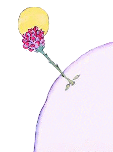
Hi ruĝiĝis kaj daŭrigis: "Se iu amas floro, unusola en ĝia speco inter milionoj kaj milionoj da steloj, al tiu sufiĉas por esti feliĉa, ke li rigardu ili. Li diris al si: 'Ie tie estas mia floro…' Sed, se ŝafeto formanĝis la floro, estas por li, kvazaŭ ĉiuj steloj subite estingiĝus! Kaj ĉu tio mem ne gravas?" Nenio plu mi povis diri. Hi subite ekploregis. Jam noktiĝis. Mi maltenis miaj iloj. Mia martelo, mia bolto, la soifo kaj la morto ne plu gravis. Sur iu stelo, iu planedo, sur la mia, sur la Tero, unu eta princiĉo bezonis konsolo. Mi brakumis hi, lulis hi. Mi diris al hi: "La floro, kiu vi amas, ne estas en danĝero… Mi ja desegnos buŝumo por via ŝafeto. Mi desegnos kiraseto por via floro… Mi…"
Mi ne tro bone sciis, kiam diri io. Mi sentis mi tre mallerta. Mi ne sciis, kiel atingi hi, kiel kontakti hi…
Ja tiel mistera estas la lando de larmoj.
VIII
Mi tre rapide lernis pli bone koni tiu floro. De ĉiam kreskadis sur la planedo de la eta princiĉo floroj tre simplaj, ornamitaj per unu sola vico da petaloj, okupantaj malmulte da spaco kaj ĝenantaj neniu. Ili aperis iumatene en la herbo kaj poste velkis tiuvespere. Sed tiu ĉi ekĝermis en unu tago el semo alblovita Dio-scias-de-kie, kaj la eta princiĉo tre atente observis tiu ŝoso, kiu ne similis al la aliaj. Ĝi povis estis nova specio de baobabo.
Sed la arbusteto baldaŭ ĉesis kreski kaj komencis prepari floro. La eta princiĉo, kiu ĉeestis la elvolviĝo de granda burĝono, ja sentis, ke iu mirakla aĵo ekaperos el ĝi, sed la floro, ŝirmata per sia verda ĉambro, senfine longe preparadis sia beleco. Ĝi zorge elektadis siaj koloroj. Ĝi malrapide vestadis si, ĝi taŭge surmetadis siaj petaloj unu post unu. Ĝi ne volis naskiĝi tute ĉifita, kiel la papavetoj… Ĝi ne volis aperi alie, ol plene radianta de beleco. Jes ja! Ĝi estis tre koketa! Ĝia mistera tualetado do daŭris tagoj kaj tagoj.
Kaj en unu mateno, precize dum sunleviĝo, jen ĝi ekaperis.
"Ha! Mi apenaŭ vekiĝis… Mi pardonpetas… Mi ankoraŭ estas tute malkombita…"
Tiam la eta princiĉo ne povis teni sia admiro: "Kiel bela vi estas!".
"Ĉu ne?" milde respondis la floro.
La eta princiĉo ja divenis, ke ĝi ne estas
tro modesta, sed ĝi estis tiel kortuŝa!
"Estas nun, mi kredas, la horo de la
matenmanĝo," ĝi baldaŭ aldonis. "Ĉu
vi bonvolus atenti pri mi?…"
Kaj la eta princiĉo, tute konfuzita, iris por verŝilo da freŝa akvo kaj alportis ĝi al la floro.
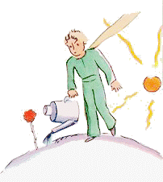
Tiel sufiĉe baldaŭ ĝi suferigis
hi per sia iom ofendiĝema malmodesteco. Iutage, ekzemple,
parolante pri siaj kvar dornoj, ĝi diris al la eta princiĉo:
"Tigro, kun siaj ungegoj, ja povos veni!…"
"Ne troviĝas tigroj sur mia planedo, kaj tigroj
ne manĝas herbo," la eta princiĉo kontraŭdiris.
"Mi ne estas herbo," milde respondis la floro.
"Pardonu al mi…"
"Mi neniel timas tigroj, sed ja abomenas trablovoj.
Ĉu vi ne havas ventŝirmilo por mi?"
"Abomeni trablovoj estas por planto
malfeliĉa afero", rimarkigis al si la eta princiĉo. "Tiu ĉi floro estas
sufiĉe malfacila…"
"Ĉiuvespere vi devos meti al super mi kloŝo. Ĉe vi estas tre
malvarme, malbone provizite. Tie, de kie mi devenas…"
Sed ĝi ĉesis paroli. Ĝi venis kiel semo. Ĝi
povus scii nenio pri aliaj mondoj. Hontante pro kaptiĝo ĉe la preparo de tiel
naiva mensogo, ĝi tusis du-tri-foje
por malpravigi la eta princiĉo:
"Ĉu vi havas ventŝirmilo?"
"Mi estis ironta por ĝi, sed vi parolis al mi!"
Tiam ĝi troigis sia tusado, por spite trudi ĉio al hi konscienc-riproĉoj. Tiel la eta princiĉo, malgraŭ sia amo plena de bonvolo, baldaŭ sentis duboj pri la floro. Hi akceptadis negravaj vortoj serioze, kaj pro tio fariĝis tre malfeliĉa.
"Pli bone se mi ne estus aŭskultinta ĝi," hi iutage konfidis al mi, "oni neniam aŭskultu floroj. Oni nur rigardu kaj flaru ili. La mia aromis mia planedo, sed mi ne sciis ĝoji pro tio. Tiu afero pri ungegoj, kiu tiel multe incitis mi, estus ja kortuŝinta mi."
Hi ankoraŭ konfidis al mi:
"Mi tiam ne kapablis kompreni io ajn! Mi
estu prijuĝinta ĝi laŭ ĝiaj agoj, ne laŭ ĝiaj
paroloj. Al mi ĝi donu aromo kaj helo. Mi
neniam estu forkurinta. Mi estu diveninta
ĝia amemo anstataŭ ĝiaj stultega ruzo.
La floroj estas tiel memkontraŭdiraj!
Sed mi estis tro juna por kapabli ami ĝi!"
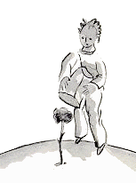
IX
Mi kredas, ke hi forŝteliĝis dank' al migrado de sovaĝaj birdoj. Matene antaŭ la foriro hi bone ordigis sia planedo. Hi zorge skrapis siaj aktivaj vulkanoj. Tiaj hi posedas du. Kaj ili estis tre oportunaj por varmigi la matenmanĝo. Hi posedis ankaŭ unu estingita vulkano. Se vulkanoj estas bone skrapitaj, ili brulas modere kaj regule, sen erupcio. Vulkanaj erupcioj estas kiel kamen-bruloj. Kompreneble, sur nia Tero ni estas multe tro malgrandaj por skrapi niaj vulkanoj. Tial ili kaŭzas al ni amasoj da zorgoj.
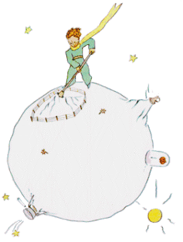
La eta princiĉo iom melankolie ankaŭ elradikigis la lastaj baobabaj ŝosoj. Hi pensis, ke hi neniam revenos. Sed dum tiu mateno ĉiuj tiuj kutimaj laboroj ŝajnis al hi ege dolĉaj. Kaj, kiam lastfoje hi estis akvumanta kaj per ĝia kloŝo kovronta la floro, hi eksentis en si ploremo.
"Adiaŭ," hi diris al la floro. Sed ĝi ne respondis. "Adiaŭ," hi denove diris. La floro ektusis, sed ne pro sia malvarmumo. "Mi estis stulta," ĝi fine diris al hi. "Pardonu mi. Penu esti feliĉa!"
La respondo sen riproĉoj vere mirigis hi. Hi restis senmova, tute konfuzita, tenante la levita kloŝo. Hi ne komprenis ĉi tiu trankvila dolĉeco.
"Jes, jes, mi amas vi," la floro diris al hi. "Estis mia kulpo, ke
vi ne sciis pri tio. Neniel gravas. Sed vi estas same stulta kiel mi.
Penu feliĉiĝi… Lasu tiu kloŝo! Mi ne plu volas ĝi."
"Sed la vento…"
"Mia malvarmumo ne estas tiom forta… La freŝa nokta aero
estos por mi saniga. Mi estas floro."
"Sed la bestoj…"
"Ja necesas, ke mi toleru du-tri raŭpoj, se mi volas koni papilioj.
Oni diras, ke ili estas tiel belaj! Se ne, kiu do vizitos mi?
Vi mem estos malproksime. Koncerne la grandaj bestoj mi
timas nenio. Mi havas miaj ungegoj."
Kaj ĝi naive montris siaj kvar dornoj. Poste ĝi aldonis:
"Ne plu prokrastu. Tio ekscitas mi. Vi decidis foriri. Foriru!"
Ĝi ne volis, ke hi vidu ĝi plori. Tiu floro estis tiel fierega…
X
Hi troviĝis en la regiono de asteroidoj 325, 326, 327, 328, 329 kaj 330. Hi do unue vizitis ili, por tie serĉi okupo kaj por kleriĝi. La unua estis loĝata de reĝiĉo. Ĉi tiu, vestita per purpuro kaj ermeno, sidis sur tre simpla, tamen majesta trono. "Ha! Jen unu regato," ekkriis la reĝiĉo, kiam hi vidis la eta princiĉo.
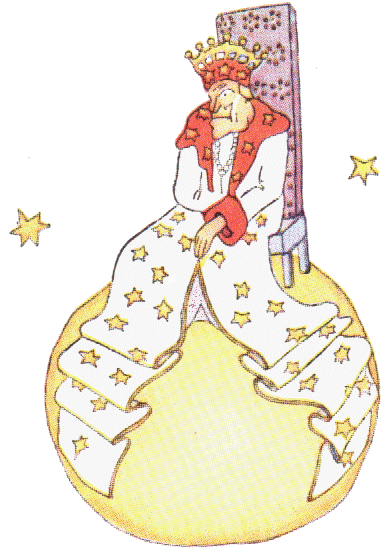
"Kiel hi povas koni mi? Hi neniam vidis mi!"
Hi ne sciis, ke por reĝoj la mondo estas tre simpla. Ĉiuj homoj
estas regatoj.
"Alproksimiĝu, por ke mi vidu vi pli bone," diris al hi la reĝiĉo, tre fiera, ke hi estas reĝo por iu.
La eta princiĉo ĉie serĉis loko por sidiĝi, sed la planedo estis tute obstrukcita per la belega ermena mantelo. Hi do restis staranta kaj, ĉar hi estis laca, oscedis.
"Oscedi antaŭ reĝo estas afero kontraŭ la etiketo," la monarkiĉo diris al hi.
"Mi malpermesas tio al vi."
Mi ne povas deteni mi," la eta princiĉo respondis, tute konfuzita.
"Mi faris longa vojaĝo, kaj mi ne dormis…"
"Tiukaze," la reĝiĉo diris, "mi ordonas al vi oscedi. Dum multaj
jaroj mi vidis neniu oscedi. La oscedoj estas por mi kuriozaĵoj.
Nu! Oscedu ankoraŭ! Tio ĉi estas ordono."
"Tio timigas mi… Mi ne povas plu…" la eta princiĉo diris ruĝiĝante.
"Hm! Hm!" la reĝiĉo respondis. "Sekve, mi… mi ordonas al vi foje oscedi, foje…" Hi iom balbutis kaj ŝajnis ofendita. La reĝiĉo nepre volis, ke hia aŭtoritato estu respektata. Hi ne toleris malobeado. Hi estis absoluta monarko. Sed, ĉar hi estis tre bona, hi donis saĝaj ordonoj.
"Se mi ordonus al iu generalo aliformiĝi al en marbirdo kaj se tiu generalo ne obeus, la kulpo ne estus lia," hi kutimis diri, "la kulpo estus mia."
"Ĉu mi rajtas sidiĝi?" la eta princiĉo timeme demandis.
"Mi ordonas, ke vi sidiĝu," la regiĉo respondis kaj hi majeste metis
al sur si unu basko de sia ermena mantelo.
Sed la eta princiĉo miris. La planedo estas eta. Super
kio do ĉi tiu reĝo povas reĝi?
"Via Reĝa Moŝto," hi diris al hi, "mi petas, pardonu, ke mi demandas vi…"
"Mi ordonas, ke vi demandu mi," la regiĉo rapide diris.
"Via Reĝa Moŝto… super kio vi reĝas?"
"Super ĉio," la regiĉo respondis grandioze simple.
"Super ĉio?"
La regiĉo per diskreta gesto montris sia propra planedo, la
aliaj planedoj kaj la steloj.
"Super ĉio ĉi?"
"Jes, super ĉio ĉi…" la reĝiĉo respondis, ĉar hi estis
ne nur absoluta, sed ankaŭ universala monarko.
"Ĉu do la steloj obeas vi?"
"Tute certe," la regiĉo diris al hi. "Ili tuj obeas. Mi ne toleras malobeado."
Tia povo admiregigis la eta princiĉo. Se hi mem havus ĝi, hi
povus ĉeesti en la sama tago ne kvardek kvar, sed sepdek du, eĉ
cent aŭ ducent sunsubiroj, neniam devigata aliloki sia seĝo!
Kaj, ĉar hi sentis si iom malgaja, memorigite pri sia malgranda
forlasita planedo, hi kuraĝiĝis peti favoro de la regiĉo:
"Mi volus vidi sunsubiroj… Plezurigu mi!… Ordonu al la
suno subiri!…"
"Se mi ordonus al iu generalo flugi de floro al floro same kiel
papilio, aŭ verki tragedio, aŭ aliformiĝi al en marbirdo, kaj se
la generalo ne plenumus la ricevita ordono, kiu malpravus? Ĉu li aŭ mi?"
"Vi," la eta princiĉo firme diris.
"Tute ĝuste. Oni devas de ĉiu postuli tio, kio li povas fari.
La aŭtoritato unue baziĝas sur la saĝo. Se vi ordonos al via popolo ĵeti si
al en la maro, ĝi ribelos. Mi havas la rajto postuli
obeado, ĉar miaj ordonoj estas saĝaj."
"Kaj mia sunsubiro?" rememorigis hi la eta princiĉo, kiu, farinte
demando unufoje, neniam plu forgesis ĝi.
"Via sunsubiro vi havos. Mi postulos ĝi. Sed, pro mia scio
pri la regarto, mi atendos, ĝis la kondiĉoj estos favoraj."
"Kiam tio okazos?" la eta princiĉo demandis.
"Hm! Hm!" respondis al hi la reĝiĉo, kiu unue konsultis dika
kalendaro, "Hm! Hm! Tio okazos ĉirkaŭ… ĉirkaŭ… tio estos hodiaŭ
vespere ĉirkaŭ la sepa kaj kvardek minutoj! Kaj vi vidos
kiel bone obeata mi estas."
La eta princiĉo oscedis. Hi bedaŭris sia maltrafita sunsubiro.
Kaj jam hi iom enuis. "Mi havas plu nenio por fari ĉi tie,"
hi diris al la regiĉo. "Mi tuj foriros!"
"Ne foriru!" respondis la regiĉo, kiu tiel multe fieris havi regato.
"Ne foriru! Mi faros vi ministro!"
"Ministro pri kio?"
"Pri… justico!"
"Sed estas neniu juĝota!"
"Oni ne scias," la regiĉo diris. "Mi ankoraŭ ne ĉirkaŭiris mia
reĝlando. Mi estas tre maljuna, mi ne havas loko por kaleŝo,
kaj piediri lacigas mi."
"Ho! sed mi jam vidis," diris la princiĉo, kiu kliniĝis por ankoraŭfoje
rigardi al la alia flanko de la planedo. "Ankaŭ tie estas neniu…"
"Do vi juĝos vi mem," la reĝiĉo respondis. "Tio estas plej malfacila.
Estas multe pli malfacile juĝi si mem, ol juĝi la aliaj. Se
vi sukcesos bone juĝi vi, tio signifos, ke vi estas vera saĝulo."
"Mi ĉie ajn povas juĝi mi mem," la eta princiĉo diris. "Mi por
tio ne bezonas loĝi ĉi tie."
"Hm! Hm!" la regiĉo diris. "Mi ja kredas, ke ie sur mia planedo
estas maljuna rato. Mi aŭdas ĝi dumnokte. Vi povos juĝi
tiu maljuna rato. De tempo al tempo vi kondamnos ĝi al
morto. Tiel ĝia vivo dependos de via juĝo. Sed ĉiufoje vi amnestios ĝi,
por ŝpari ĝi. Estas nur unu."
"Mi," la eta princiĉo respondis, "ne ŝatas kondamni al morto,
kaj mi pensas, ke mi tuj foriros."
"Ne," la regiĉo diris.
Sed la eta princiĉo, fininte siaj preparoj, ne volis ĉagreni la
maljuna monarkiĉo:
"Se Via Reĝa Moŝto dezirus esti akurate obeata, vi povus doni
al mi saĝa ordono. Ekzemple, vi povus ordoni al mi foriri
antaŭ ol pasos unu minuto. Ŝajnas al mi, ke la kondiĉoj estas favoraj…"
Ĉar la reĝiĉo respondis nenio, la eta princiĉo unue hezitis
kaj poste kun suspiro ekiris for.
"Mi nomumas vi mia ambasadoro," la reĝiĉo tiam kriis rapide.
Hi surhavis mieno de grava aŭtoritatulo.
"La granduloj certe estas strangaj," la eta princiĉo diris al si dumvoje.
XI
La dua planedo estis loĝata de malmodestulo.
"Ha! Ha! Ha! Jen vizito de iu admiranto!" de malproksime ekkriis
la malmodestulo, tuj kiam hi ekvidis la eta princiĉo.
Efektive, por malmodestuloj la aliaj homoj estas admirantoj.
"Bona tago," diris la eta princiĉo. "Vi surhavas stranga
ĉapelo."
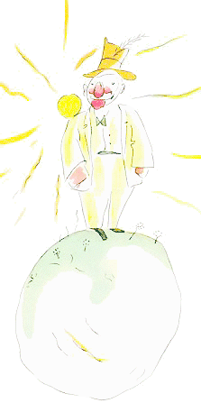
"Ĝi estas por saluti," respondis la malmodestulo. "Por saluti,
kiam oni aklamas mi. Bedaŭrinde, neniam iu pasas tie ĉi."
"Ĉu vere?" diris la eta princiĉo, kiu ne komprenis.
"Klapfrapu viaj manoj unu kontraŭ la alia," konsilis la malmodestulo.
La eta princiĉo kunfrapis siaj manoj. La malmodestulo modeste
salutis, levante sia ĉapelo.
"Tio ja estas pli amuza ol la vizito ĉe la reĝo," pensis la eta princiĉo.
Kaj hi denove kunfrapis siaj manoj. La malmodestulo denove salutis, levante
sia ĉapelo.
Post kvin minutoj de tiu ekzercado la eta princiĉo laciĝis
pro monotoneco de la ludo.
"Kaj kio fari," hi demandis, "por ke la ĉapelo falu?" Sed la malmodestulo ne aŭdis.
La malmodestuloj ĉiam aŭdas nur laŭdoj.
"Ĉu vi vere multe admiras mi?" hi demandis la eta princiĉo.
"Kio signifas admiri?"
"Admiri signifas rekoni, ke mi estas sur la planedo la plej
bela, plej bele vestita, plej riĉa, kaj plej inteligenta homo."
"Sed vi estas sola sur via planedo!"
"Faru al mi tiu ĉi plezuro! Tamen admiru mi!"
"Mi admiras vi," diris la eta princiĉo, levante iom siaj ŝultroj,
"sed kiel tio povas interesi vi?"
Kaj la eta princiĉo foriris.
"La granduloj certe estas tre strangaj," hi nur pensis dumvoje.
XII
La sekvanta planedo estis loĝata de ebriulo. Tiu vizito estis tre mallonga, sed ege la eta princiĉo malĝojigis.
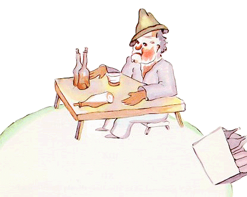
"Kio vi faras ĉi tie?" hi diris al la ebriulo, kiu
hi trovis silente sidanta antaŭ unu vico da plenaj
boteloj kaj unu vico da malplenaj.
"Mi drinkas," respondis la ebriulo kun funebra
mieno.
"Kaj kial vi drinkas?" demandis la eta princiĉo.
"Por forgesi," respondis la ebriulo.
"Por forgesi kio?" demandis la eta princiĉo, kiu jam ekkompatis hi.
"Por forgesi, ke mi hontas," konfesis la ebriulo mallevante la
kapo.
"Pri kio vi hontas?" demandis la eta princiĉo, kiu deziris helpi al hi.
"Mi hontas drinki!" la ebriulo diris por fini kaj hi definitive eksilentis.
Kaj la eta princiĉo foriris perpleksa.
"La granduloj certe estas tre multe strangaj," hi pensis dumvoje.
XIII
La kvara planedo estis loĝata de negocisto. Tiu viriĉo estis tiel okupata, ke hi eĉ ne levis sia kapo dum la alveno de la eta princiĉo.
"Bona tago," salutis la eta princiĉo, "Via cigaredo estingiĝis."
"Tri kaj du estas kvin. Kvin kaj sep, dek du. Dek du kaj tri, dek
kvin. Bona tago! Dek kvin kaj sep estas dudek du. Dudek du
kaj ses, dudek ok. Mi ne havas tempo por denove ekbruligi
mia cigaredo. Dudek ses kaj kvin estas tridek unu. Fu! Tio
entute estas do kvincent unu milionoj sescent dudek du mil
sepcent tridek unu."
"Kvincent milionoj da kio?"
"Ha! Ĉu vi ankoraŭ estas tie ĉi? Kvincent unu milionoj da …
mi ne scias plu… Mi havas tiom da laboro! Mi ja estas serioza,
mi ne amuziĝas per bagatelaĵoj! Du kaj kvin estas sep…"
La negocisto levis la kapo.
"Dum la kvindek kvar jaroj de kiam mi loĝas sur tiu ĉi planedo,
mi estis ĝenita nur trifoje. La unua fojo estis antaŭ
dek jaroj, pro majskarabo, kiu falis de loko, kiu Dio scias. Ĝi
bruis terure, kaj sekve mi faris kvar eraroj en adicio.
La dua fojo estis antaŭ dek unu jaroj pro reŭmatisma atako.
Korpa ekzercado mankas al mi. Mi ne havas tempo por vagadi. Mi
ja estas serioza. La tria fojo… jen! Mi do diris kvincent unu milionoj…"
"Milionoj da kio?"
La negocisto ekkomprenis, ke hi neniel povas esperi trankvilo.
"Milionoj da tiuj aĵetoj, kiuj oni iafoje vidas sur la ĉielo."
"Ĉu muŝoj?"
"Tute ne! Oraj aĵetoj pri kiuj revas mallaboremuloj. Sed mi ja
estas serioza! Mi ne havas tempo por revadi."
"Ha! Ĉu steloj?"
"Jes, ĝuste, ili estas steloj."
"Kaj kio vi faras per kvincent milionoj da steloj?"
"Kvincent unu milionoj sescent dudek du mil sepcent tridek
unu. Mi ja estas serioza kaj preciza."
"Kaj kio vi faras per tiuj steloj?"
"Kio mi faras per ili?"
"Jes, diru!"
"Nenio mi faras per ili. Mi posedas ili."
"Ĉu vi posedas la steloj?"
"Jes."
"Sed mi jam vidis reĝiĉo, kiu…"
"La reĝoj ne posedas. Ili reĝas. Tio estas tute alia afero."
"Kaj kial utilas al vi posedi la steloj?"
"Tio utilas al mi por esti riĉa."
"Kaj kial utilas al vi esti riĉa?"
"Tio utilas al mi por aĉeti aliaj steloj, se iu trovas iuj."
La eta princiĉo pensis: Tiu ĉi ulo rezonas iom same, kiel mia ebriulo. Tamen hi demandis pli:
"Kiel oni povas posedi steloj?"
"Al kiu ili apartenas?" tuj rebatis la negocisto grumblante.
"Mi ne scias. Al neniu."
"Do, ili apartenas al mi, ĉar mi estis la unua, kiu pensis pri ili."
"Ĉu tio sufiĉas?"
"Kompreneble. Se vi trovos diamanto, kiu estas nenies propraĵo,
ĝi apartenos al vi. Se vi trovos insulo, kiu estas nenies
propraĵo, ĝi apartenos al vi. Se vi kiel unua havas iu ideo, vi
patentigas ĝi: ĝi apartenas al vi. Kaj sekve mi posedas la steloj,
ĉar neniam iu antaŭ mi havis la ideo posedi ili."
"Tio estas vera," diris la eta princiĉo. "Sed kio vi faras per ili?"
"Mi administras ili. Mi kalkulas kaj rekalkulas ili," klarigis
la negocisto. "Estas malfacile. Sed mi estas serioza homo!"
La eta princiĉo ankoraŭ ne estis kontenta.
"Se mi posedas fulardo, mi povas meti ĝi ĉirkaŭ mia kolo
kaj kunporti. Se mi posedas floro, mi povas deŝiri ĝi kaj kunporti.
Sed vi ne povas preni la steloj!"
"Ne, sed mi povas deponi ili en banko."
"Kio tio signifas?"
"Tio signifas, ke mi skribas al sur papereto la nombro de
miaj steloj. Kaj poste mi ŝlosas tiu ĉi papero en tirkesto."
"Nenio pli?"
"Tio sufiĉas!"
"Tio estas amuza," pensis la eta princiĉo. "Sufiĉe poezia, sed ne
tre serioza."
"Mi posedas floro, kiu mi akvumas ĉiutage," hi ankoraŭ
diris. "Mi posedas tri vulkanoj, kiuj mi skrapas ĉiusemajne.
Mi bone skrapas ankaŭ tiu, kiu estas estingita. Oni neniam
scias! Por miaj vulkanoj kaj ankaŭ por mia floro estas utile, ke
mi posedas ili. Sed vi ne estas utila por la steloj…"
La negocisto malfermis sia buŝo, sed trovis nenio por respondi.
Kaj la eta princiĉo foriris.
"La granduloj certe estas tute strangaj," hi pensis dumvoje.
XIV
La kvina planedo estis tre kurioza. Ĝi estis la plej malgranda el
ĉiuj. Tie estis ĝuste nur sufiĉa spaco por loki unu stratlanterno
kaj unu lanternisto. La eta princiĉo ne sukcesis klarigi al si, por
kio povas utili lanterno kaj lanternisto sur planedo sen domo
kaj loĝantaro. Tamen hi pensis:
"Povas esti, ke tiu viriĉo estas stulta. Tamen hi estas io malpli ol la
reĝiĉo, la malmodestulo, la negocisto kaj la ebriulo. Almenaŭ hia laboro havas senco.
Kiam hi eklumigas sia lanterno, estas kvazaŭ hi
naskigus unu plia stelo aŭ floro. Kiam hi estingas sia lanterno,
estas kvazaŭ hi endormigus la stelo aŭ la floro. Bela okupo. Estas
vere utila, ĉar estas bela!"
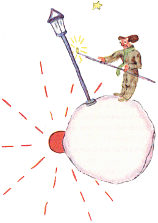
Kiam hi alvenis sur la planedo, hi respekte salutis la lanternisto:
"Bona tago! Kial vi ĵus estingis via lanterno?"
"Estas laŭ ordono," respondis la lanternisto. "Bona tago!"
"Kio estas ordono?"
"Ĝi estas: mi devas estingi mia lanterno. Bona vespero!"
Kaj hi denove eklumigis ĝi.
"Sed kial vi ĵus denove eklumigis ĝi?"
"Estas laŭ ordono," respondis la lanternisto.
"Mi ne komprenas," diris la eta princiĉo.
"Estas nenio por kompreni," diris la lanternisto. "Ordono estas ordono. Bona tago!"
Kaj hi estingis sia lanterno. Poste hi viŝis sia frunto per ruĝe kvadratita naztuko.
"Terura okupo ĝi estas. En la pasinteco estis bone. Matene mi
estingis, kaj vespere mi eklumigis. Mi havis la cetero de la tago
por ripozi kaj la cetero de la nokto por dormi."
"Kaj ĉu de tiam la ordono estis ŝanĝita?"
"La ordono ne estis ŝanĝita," diris la lanternisto. "Ja precize
pro tio ĝi estas terura. De jaro al jaro la planedo ĉiam pli kaj pli
rapide turniĝis, sed la ordono neniam ŝanĝiĝis!"
"Kaj kio do?" diris la eta princiĉo.
"Do, ĉar nun ĝi turniĝas po unu fojo ĉiuminute, mi ne plu havas
eĉ sekundo por paŭzi. Mi eklumigas kaj estingas po unu
fojo ĉiuminute!"
"Tio estas vere stranga! La tago ĉe vi daŭras unu minuto!"
"Tio tute ne estas stranga!" diris la lanternisto. "Ni konversaciis jam dum unu monato."
"Dum unu monato?"
"Jes. Tridek minutoj estas tridek tagoj! Bona vespero!"
Kaj hi denove eklumigis sia lanterno.
La eta princiĉo rigardis hi kaj ekamis tiu lanternisto, kiu
estis tiel fidela al la ordono, kiu hi ricevis. Hi rememoris pri la
sunsubiroj, kiuj hi mem iam provis vidi, alilokante sia seĝo.
Hi volis helpi sia amiko:
"Aŭskultu!… Mi konas metodo, per kiu vi povos ripozi, kiam vi volas…"
"Mi ĉiam volas," diris la lanternisto.
Ĉar oni povas esti samtempe kaj fidela kaj mallaborema.
La eta princiĉo daŭrigis:
"Via planedo estas tiel malgranda, ke vi povas ĉirkaŭiri ĝi
per tri paŝegoj. Vi nur devas malrapide paŝi por ĉiam resti sub
la suno. Kiam vi volos ripozi, vi paŝos…, kaj la tago daŭros tiel
longe, kiel vi volos."
"Tio ne tre helpos al mi," diris la lanternisto. "Ĉar pli ol kio
ajn alia en vivo mi ŝatas dormi."
"Malbonŝance," diris la eta princiĉo.
"Malbonŝance," diris la lanternisto. "Bona tago!" Kaj hi
estingis sia lanterno.
"Tiu ĉi," pensis la eta princiĉo daŭrigante sia vojaĝo, "estus
malestimata de ĉiuj aliaj: la reĝo, la malmodestulo, la ebriulo kaj
la negocisto. Tamen hi estas la sola, kiu ne ŝajnas al mi ridinda.
Eble, ĉar hi okupiĝas pri io alia, ol pri si mem."
Hi suspiris pro bedaŭro kaj pensis:
"Tiu estas la sola, kun kiu mi povus amikiĝi. Sed hia planedo
estas vere tro malgranda. Sur ĝi ne estas spaco por du personoj…"
La eta princiĉo ne kuraĝis konfesi al si mem, ke hi ŝatis tiu ĉi
benita planedo precipe pro la mil kvarcent kvardek sunsubiroj en ĉiu tago.
XV
La sesa planedo estis dekoble pli vasta. Ĝi estis loĝata de maljuna sinjoro, kiu verkis dikegaj libroj.
"Nu! Jen esploristo!" hi ekkriis, kiam hi ekvidis la eta
princiĉo.
La eta princiĉo sidiĝis al sur la tablo kaj iomete anhelis
pro laceco. Hi jam tiom vojaĝis!
"De kie vi venas?" demandis la maljuna sinjoro.
"Kio estas tiu dika libro?" diris la eta princiĉo. "Kio vi faras tie ĉi?"
"Mi estas geografo," diris la maljuna sinjoro.
"Kio estas geografo?"
"Geografo estas klerulo, kiu scias, kie troviĝas maroj, riveroj,
urboj, montoj kaj dezertoj."
"Tio ĉi estas tre interesa," diris la eta princiĉo. "Jen fine vera
profesio!" Kaj hi ĵetis ĉirkaŭrigardo al sur la planedo de la geografo.
Hi ankoraŭ neniam vidis tiel majesta planedo.
"Estas tre bela via planedo. Ĉu estas oceanoj sur ĝi?"
"Mi ne povas scii tio," diris la geografo.
"Kaj urboj, riveregoj, dezertoj?"
"Ankaŭ tio mi ne povas scii," diris la geografo.
"Sed vi estas geografo!"
"Ĝuste," diris la geografo, "sed mi ne estas esploristo.
Esploristoj tute mankas al mi. Ne geografoj kalkulas urboj, riveregoj,
montoj, maroj, oceanoj kaj dezertoj. Geografo estas
tro grava persono por vagadi. Li ne forlasas sia skribotablo,
sed tie akceptas esploristoj. Li pridemandas ili kaj notas iliaj rememoroj.
Kaj, se la rememoroj de iu el ili ŝajnas al li interesaj,
la geografo enketas pri la moraleco de la esploristo.
"Kaj do?"
"Ĉar esploristo, kiu mensogus, kaŭzus katastrofoj en libroj
pri geografio. Kaj ankaŭ esploristo, kiu drinkus."
"Kial do?" diris la eta princiĉo.
"Ĉar la ebriuloj vidas duige. Tiam la geografo notus du montoj tie,
kie estas nur unu."
"Mi konas iu, kiu estus malbona esploristo," diris la eta
princiĉo.
"Povas esti. Do, kiam la moraleco de la esploristo ŝajnas bona,
oni enketas pri lia eltrovo."
"Ĉu vi iras al tie por rigardi?"
"Ne. Tio estus tro komplika. Sed oni postulas de la esploristo,
ke li donu pruvoj. Se ekzemple temas pri eltrovo de granda
monto, oni postulas, ke li alportu el ĝi grandaj ŝtonoj."
La geografo subite ekscitiĝis.
"Sed vi mem venas de malproksime! Vi estas esploristo!
Priskribu via planedo al mi!"
Kaj la geografo malfermis sia registro kaj pintigis sia krajono.
Oni skribas la esploristaj rakontoj unue per krajono.
Oni atendas por skribi per inko ĝis la esploristo estos alportinta
pruvoj.
"Nu?" ekdemandis la geografo.
"Ho, ĉe mi," diris la eta princiĉo, "ja ne estas tre interese, kaj
estas ege malgrande. Mi havas tri vulkanoj. Du aktivaj kaj unu
estingita. Sed oni neniam scias!"
"Oni neniam scias," ripetis la geografo.
"Mi ankaŭ havas unu floro."
"Ni ne notas floroj," diris la geografo.
"Kial do? Ili estas la blej bela afero."
"Ĉar la floroj estas eferemaj."
"Kio signifas eferema?"
"Libroj pri geografio," diris la geografo, "estas la
plej valoraj el ĉiuj libroj. Ili neniam elmodiĝas. Tre malofte okazas, ke
monto alilokiĝas. Tre malofte okazas, ke oceano elsekiĝas. Ni
priskribas eternaĵoj."
"Sed estingitaj vulkanoj povas vekiĝi," interrompis la eta
princiĉo. "Kio signifas efemera?"
"Ĉu vulkanoj estas estingitaj aŭ aktivaj, estas same koncerne ni,"
diris la geografo. "Kio gravas por ni, estas la montoj. Ili ne ŝanĝiĝas."
"Sed, kio signifas efemera?" denove demandis la eta princiĉo,
kiu dum sia vivo neniam rezignas demando, unufoje farinte
ĝi.
"Tio signifas io, kio estas minacata de baldaŭa forpaso."
"Ĉu mia floro estas minacata de baldaŭa forpaso?"
"Tutcerte."
"Mia floro estas efemera," diris la eta princiĉo, "kaj ĝi havas nur
kvar dornoj por defendi si kontraŭ la mondo! Kaj mi lasis ĝi tute
sola!"
Tiel hi unuafoje ekbedaŭris. Sed hi tuj rekuraĝiĝis.
"Kio vi konsilas, ke mi vizitu?" hi demandis.
"La planedo Tero," respondis la geografo. "Ĝi havas bona reputacio…"
Kaj la eta princiĉo foriris, meditante pri sia floro.
XVI
La sepa planedo estis do Tero.
Tero ne estas ajneca planedo! Oni nombras sur ĝi cent dek unu reĝoj (blankaj kaj nigraj), sep mil geografoj, naŭcent mil negocistoj, sep milionoj kaj duono da ebriuloj kaj tricent dek unu milionoj da malmodestuloj, tio estas: duo da miliardoj da granduloj.
Por doni al vi ideo pri la dimensioj de Tero, mi diros al vi, ke, antaŭ ol oni inventis elektro, estis necese vivteni sur ĉiuj ses kontinentoj vera armeo de kvarcent sesdek du mil kvincent dek unu lanternistoj. De malproksime tio faris belega efekto. La movoj de tiu armeo estis regulaj kiel tiuj de operbaleto. Unuavice la lanternistoj de Nov-Zelando kaj Aŭstralio venis. Poste, eklumiginte siaj lanternoj, ili iris dormi. Tiam la lanternistoj de ĉinio kaj Siberio siavice ekpartoprenis en la baleto. Kaj ankaŭ ili malaperis al en la kulisoj. Tiam venis la vico de la lanternistoj el Rusio kaj Hindujo. Kaj la vico de tiuj de Afriko kaj Eŭropo. Kaj tiuj el Sud-Ameriko. Kaj ili neniam eraris pri siaj vicoj por eniri sur la scenejo. Estis grandioze.
Nur la lanternisto de la unusola lanterno ĉe Nordpoluso kaj lia kolego ĉe Sudpoluso vivis malzorge kaj pigre: ili laboris po du fojoj ĉiujare.
XVII
Kiam oni volas spriti, oni foje mensogas iom. Mi ne estis tre honesta, parolante al vi pri la lanternistoj. Mi riskas doni malĝusta ideo pri nia planedo al tiuj, kiuj ne konas ĝi. La homoj okupas tre malmulte da spaco sur la Tero. Se la duo da miliardoj da homoj, kiuj loĝas sur la Tero, starus iom dense kiel por mitingo, entenus ili facile publika placo longa kaj larĝa dudek kilometroj. Oni povus amasigi la tuta homaro sur la plej malgranda pacifika insuleto. Kompreneble, la granduloj ne kredos vi. Ili kredas, ke ili okupas multe da spaco. Ili vidas si gravaj, kiel baobaboj. Vi do konsilos al ili kalkuli. Ili amegas ciferoj: tio plaĉos al ili. Sed vi ne perdu via propra tempo. Estas senutile. Vi fidas mi. Do, la eta princiĉo, alveninte al sur Tero, miris vidante neniu.
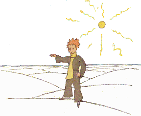
Hi jam ektimis, ke hi eraris pri la planedo, kiam lunkolora ringo
ekmoviĝetis sur la sablo.
"Bona nokto!" trafe-maltrafe diris la eta princiĉo.
"Bona nokto," diris la serpento.
"Al sur kiu planedo mi falis?" demandis la eta princiĉo.
"Al sur Tero, en Afriko," respondis la serpento.
"Ha!… ĉu do estas neniu sur la Tero?"
"Ĉi tie estas dezerto. Neniu troviĝas en dezertoj. Tero estas
granda," diris la serpento.
La eta princiĉo sidiĝis al sur ŝtono kaj levis siaj okuloj al la
ĉielo:
"Mi demandas mi," hi diris, "Ĉu la steloj brilas, por ke ĉiu
povu iam retrovi la sia. Rigardu mia planedo! Ĝi estas ĝuste
super ni… Sed kiel malproksime ĝi estas!"
"Ĝi estas bela," diris la serpento. "Kial vi venis al ĉi tie?"
"Mi havas malfacilaĵoj kun certa floro," diris la eta princiĉo.
"Ha!" diris la serpento.
Kaj ili silentis.
Fine la eta princiĉo reparolis:
"Kie estas homoj? Oni estas iom soleca en la dezerto…"
"Oni estas soleca ankaŭ inter homoj," diris la serpento.
La eta princiĉo longe rigardis ĝi:
"Vi estas stranga besto, maldika kiel fingro," hi fine diris.
"Sed mi estas pli potenca ol fingro de reĝo," diris la serpento.
La eta princiĉo ekridetis:
"Vi ne estas tre potenca… vi eĉ ne havas kruroj… vi eĉ ne
povas vojaĝi…"
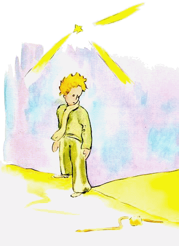
"Mi povas konduki vi al pli malproksime ol ŝipo," diris la serpento.
Ĝi volviĝis ĉirkaŭ maleolo de la eta princiĉo kiel ora braceleto:
"Kiu mi tuŝas, tiu mi redonas al tero, el kiu li devenas," ĝi
aldonis. "Sed vi estas pura kaj venas de stelo…"
La eta princiĉo respondis nenio.
"Mi kompatas vi, tiel sola sur ĉi tiu granita Tero. Mi povas
iam helpi vi, se vi tro nostalgios pri via planedo. Mi povas…"
"Ho! Mi sufiĉe bone komprenis," diris la eta princiĉo, "sed kial
vi ĉiam esprimiĝas per enigmoj?"
"Mi solvas ili ĉiuj," diris la serpento.
Kaj ili eksilentis.
XVIII
La eta princiĉo trairis la dezerto kaj renkontis nur unu floro.
Floro kun tri petaloj, tute neniom signifa.
"Bona mateno!" diris la eta princiĉo.
"Bona tago!" diris la floro.
"Kie estas homoj?" ĝentile demandis la eta princiĉo.
La floro iam vidis pasi karavano.
"Homoj? Ekzistas da ili ses aŭ sep, mi kredas. Mi ekvidis ili
antaŭ jaroj. Sed oni neniam scias, kie trovi ili. Ventoj promenigas ili.
Mankas al ili radikoj; tio multe ĝenas ili."
"Adiaŭ!" diris la eta princiĉo.
"Adiaŭ!" diris la floro.
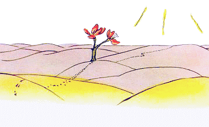
IXX
La eta princiĉo suprengrimpis sur alta monto. La solaj montoj,
kiuj hi iam konis, estis la tri vulkanoj, kies supro atingas la alteco de liaj genuoj.
Kaj hi uzis la estingita vulkano kiel tabureto.
"Supre, sur monto alta kiel tiu ĉi," hi pensis, "mi per unu sola
rigardo ekvidos la tuta planedo kaj ĉiuj homoj…" Sed hi ekvidis
nenio alia ol pinteca rokaro.
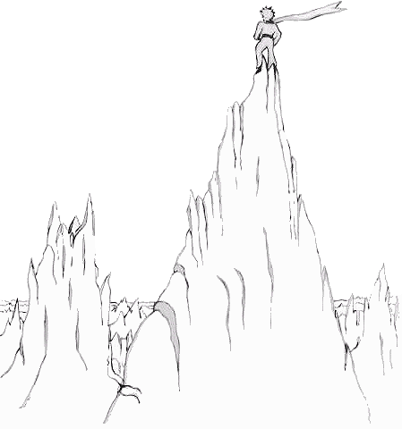
"Bona tago!" hi trafe-maltrafe diris.
"Bona tago!… Bona tago!… Bona tago!…" respondis la
eĥo.
"Kiu vi estas?!" diris la eta princiĉo.
"Kiu vi estas?!… Kiu vi estas?!… Kiu vi estas?!…" respondis la eĥo.
"Estu miaj amikoj," hi diris, "mi estas sola."
"Mi estas sola… mi estas sola… mi estas sola…" respondis la eĥo.
"Kia stranga planedo!" hi tiam pensis. "Ĝi estas tute seka kaj tute
pinta kaj tute sola. Kaj la homoj ne havas fantazio. Ili ripetas, kio
oni diras al ili… Hejme mi havis floro; ĝi parolis ĉiam unua…"
XX
Sed okazis, ke la eta princiĉo, longe paŝinte sur sablo, rokoj kaj
neĝo, fine malkovris vojo. Kaj ĉiuj vojoj kondukas al homoj.
"Bona tago!" hi diris.
Estis tie ĝardeno plena de rozoj.
"Bona tago!" diris la rozoj.
La eta princiĉo rigardis ili. Ili ĉiuj similis al hia floro.
"Kiuj estas vi?" hi demandis miregante.
"Ni estas rozoj," diris la rozoj.
"Ĉu?!" diris la eta princiĉo.
Kaj hi sentis si tre malfeliĉa. Hia floro rakontis al hi, ke en la
universo ĝi estas sola en sia speco. Kaj jen estis kvin mil kiel ĝi,
tute samaj, en unu sola ĝardeno!
"Ĝi ofendiĝus," hi diris al si, "se ĝi vidus ĉi tio… ĝi treege tusus
kaj ŝajnigus si mortanta por eviti ridindo. Kaj mi devus ŝajnigi
kvazaŭ mi flegas ĝi, ĉar alie ĝi vere mortus, nur por humiligi ankaŭ mi…"
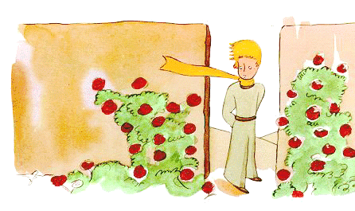
Poste hi aldone diris al si: "Mi kredis, ke mi posedas unika floro,
sed mi posedas nur ordinara rozo. Ĝi kaj miaj tri vulkanoj,
kies supro atingas alteco de miaj genuoj kaj el kiuj unu estas eble
por ĉiam estingita, ja ne faras mi tre grandioza princiĉo…"
Kaj, kuŝante sur herbejo, hi ploris.
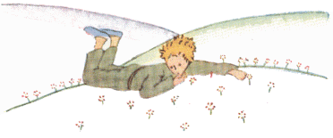
XXI
En tiu momento aperis vulpo:
"Bona tago!" diris la vulpo.
"Bona tago!" ĝentile respondis la eta princiĉo. Hi turniĝis,
sed vidis nenio.
"Mi estas tie ĉi sub la pomarbo," diris la voĉo…
"Kiu vi estas?" diris la eta princiĉo. "Vi estas sufiĉe beleta…"
"Mi estas vulpo," diris la vulpo.
"Venu ludi kun mi," proponis al ĝi la eta princiĉo. "Mi estas tiel
malgaja!…"
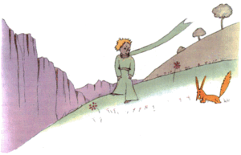
"Mi ne povas ludi kun vi," diris la vulpo. "Mi ne estas malsovaĝigita."
"Ha, pardonu," diris la eta princiĉo.
Sed post pripenso hi aldonis:
"Kio signifas malsovaĝigi?"
"Vi ne estas ĉi-tiea," diris la vulpo. "Kio vi serĉas?"
"Mi serĉas homoj," diris la eta princiĉo. "Kio signifas malsovaĝigi?"
"La homoj," diris la vulpo, "havas pafiloj kaj ili ĉasas. Kia ĝenaĵo!
Ili ankaŭ bredas kokinoj. Tio estas ilia sola intereso. Ĉu
vi serĉas kokinoj?"
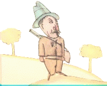
"Ne," diris la eta princiĉo. "Mi serĉas amikoj. Kio signifas
malsovaĝigi?"
"Tio estas tre forgesata afero," diris la vulpo. "Tio signifas krei
rilatojn…"
"Krei rilatoj?"
"Kompreneble," diris la vulpo. "Vi ankoraŭ estas por mi nur
knabiĉeto tute simila al cent mil knabiĉetoj. Kaj mi ne bezonas vi.
Kaj ankaŭ vi ne bezonas mi. Mi estas por vi nur vulpo simila
al cent mil vulpoj. Sed, se vi malsovaĝigos mi, ni bezonos ni
reciproke. Vi estos por mi unika en la mondo. Mi estos por vi
unika en la mondo."
"Mi ekkomprenas," diris la eta princiĉo. "Mi konas certa floro… mi kredas,
ke ĝi malsovaĝigis mi…"
"Kredeble," diris la vulpo. "Oni vidas sur Tero ĉiaj aferoj…"
"Ho, tio ne estas sur Tero," diris la eta princiĉo. La vulpo ŝajnis
tre scivola:
"Ĉu sur alia planedo?"
"Jes."
"Ĉu estas ĉasistoj sur tiu planedo?"
"Ne."
"Jen interesa afero! Kaj ĉu estas kokinoj?"
"Ne."
"Nenio estas perfekta," suspiris la vulpo.
Sed ĝi revenis al sia ideo:
"Mia vivo estas monotona. Mi ĉasas kokinoj kaj homoj ĉasas mi.
Ĉiuj kokinoj similas unuj al aliaj, kaj ĉiuj homoj ankaŭ.
Do mi iom enuas. Sed, se vi malsovaĝigos mi, mia vivo estos
kvazaŭ suna. Mi konos sono de paŝoj, kiuj distingiĝas de ĉiuj
aliaj. La aliaj paŝoj forpelas mi al en grundo. Viaj vokos mi kiel
muziko por iri el mia ternesto. Kaj rigardu! Ĉu vi vidas tie tritikaj
kampoj? Mi ne manĝas pano. Tritiko estas por mi senutila.
Tritikaj kampoj memorigas mi pri nenio. Kaj tio estas
malgaja! Sed vi havas oraj haroj. Estos mirinde post kiam vi
malsovaĝigos mi! Ora tritiko memorigos mi pri vi. Kaj mi
amos la susuro de vento en tritiko…"
La vulpo eksilentis kaj longe rigadis la eta princiĉo:
"Mi petas… malsovaĝigu mi!" ĝi diris.
"Volonte!" respondis la eta princiĉo, "sed mi ne havas multe da
tempo. Mi devas trovi amikoj kaj lerni multaj aferoj."
"Oni konas nur tio, kio oni malsovaĝigis," diris la vulpo.
"La homoj ne plu havas tempo por io ajn koni. Ili aĉetas tute
pretaj objektoj ĉe vendistoj. Sed, ĉar amikvendistoj ne ekzistas,
homoj ne plu havas amikoj. Se vi volas amiko, malsovaĝigu mi!"
"Kio necesas fari?" demandis la eta princiĉo.
"Necesas esti tre pacienca," respondis la vulpo. "Unue vi sidiĝu
iom malproksime de mi, tiele, sur la herbo. Mi rigardos vi
oblikve, sed vi diros nenio. Paroloj estas fonto de miskomprenoj.
Sed ĉiutage vi povos sidiĝi iomete pli proksime…"
La morgaŭa tago la eta princiĉo revenis.
"Prefere vi revenu ĉiam je la sama horo," diris la vulpo. "Se,
ekzemple, vi venos je la kvara posttagmeze, mi komencos esti
feliĉa ekde la tria. Ju pli la tempo pasos al antaŭe, des pli feliĉa
mi sentos mi. Jam je la kvara mi estos tremetanta kaj maltrankvila;
mi malkovros la valoro de la feliĉo! Sed, se vi venos iam
ajn, mi neniam scios, por kiu horo prepari mia koro al feliĉo… Ritoj necesas…"
"Kio estas rito?" diris la eta princiĉo.
"Tio ankaŭ estas tro forgesita afero," diris la vulpo, "Tio, kio
distingas unu tago de la aliaj. Miaj ĉasistoj ankaŭ respektas
rito. Ĉiu jaŭdo ili dancas kun knabinoj en la vilaĝo. Tial jaŭdo
estas mirinda tago! Mi iras promeni ĝis la vitejo. Se la ĉasistoj
dancus iam ajn, la tagoj estus ĉiuj similaj, kaj mi neniel
havus ferioj."
Tial la eta princiĉo malsovaĝigis la vulpo. Sed alproksimiĝis
la horo de la foriro:
"Ho," diris la vulpo… "Mi ploros."
"Estas via kulpo," diris la eta princiĉo, "mi ne deziris
malbono por vi, sed vi volis, ke mi malsovaĝigu vi…" "Certe," diris
la vulpo. "Sed vi ploros!" diris la eta princiĉo. "Certe," diris la
vulpo. "Do, vi gajnas nenio!" "Mi gajnas io," diris la vulpo,
"pro la koloro de la tritiko." Kaj ĝi aldonis:
"Iru revidi la rozoj! Vi komprenos, ke la via estas unika en
la mondo. Revenu por adiaŭi, kaj mi donacos sekreto al vi."
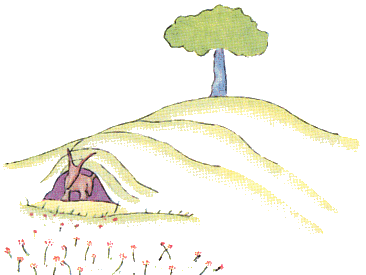
La eta princiĉo iris revidi la rozoj:
"Vi tute ne similas mia rozo, vi ankaŭ estas nenio," hi diris al ili.
"Neniu malsovaĝigis vi, kaj vi malsovaĝigis neniu. Vi
estas kiel estis mia vulpo. Ĝi estis nur vulpo simila al cent mil
aliaj. Sed ĝi fariĝis mia amiko kaj ĝi nun estas unika en la mondo."
Kaj la rozoj estis tute konsternitaj.
"Vi estas belaj sed malplenaj," hi daŭrigis. "Oni ne povas
morti por vi. Kompreneble, ordinara pasanto kredus, ke mia
propra rozo similas vi. Sed ĝi sola pli gravas ol vi ĉiuj, ĉar ĝi
estas tiu, kiu mi akvumis. Ĉar ĝi estas tiu, kiu mi metis al sub la
kloŝo. Ĉar ĝi estas tiu, kiu mi ŝirmis per la ventŝirmilo. Ĉar ĝi
estas tiu, kies raŭpoj mi mortigis (escepte de du aŭ tri fariĝontaj papilioj).
Ĉar ĝi estas tiu, kiu mi aŭskultadis, kiam ĝi
plendadis aŭ fanfaronadis, aŭ eĉ, iafoje, kiam ĝi silentis. Ĉar ĝi
estas mia rozo!"
Kaj hi revenis al la vulpo:
"Adiaŭ," hi diris….
"Adiaŭ," diris la vulpo. "Jen mia sekreto. Ĝi estas tre simpla:
oni bone vidas nur per sia koro. La esenco estas nevidebla per
okuloj."
"La esenco estas nevidebla per okuloj," ripetis la eta princiĉo
por memori.
"La homoj forgesis ĉi tiu veraĵo," diris la vulpo. "Sed vi ne
forgesu ĝi. Vi fariĝas por ĉiam respondeca por tio, kio vi malsovaĝigis.
Vi estas respondeca por via rozo…"
"Mi estas respondeca por mia rozo…" ripetis la eta princiĉo
por memori.
XXII
"Bona tago!" diris la eta princiĉo.
"Bona tago!" diris la relŝanĝisto.
"Kio vi faras ĉi tie?" demandis la eta princiĉo.
"Mi apartigas vojaĝantoj po kapoj da mil unuoj," diris la
relŝangiŝto. "Mi ekspedas, jen al dekstre, jen al maldekstre, la trajnoj, kiuj forportas ili."
Kaj lumanta rapidvagonaro, muĝanta kiel fulmotondro, tremigis la budo de la relŝangisto.
"Ili certe urĝiĝas," diris la eta princiĉo. "Kio ili serĉas?"
"Tio ne scias eĉ la lokomotivestro," respondis la relŝanĝisto.
Kaj en la inversa direkto muĝis dua lumanta rapidvagonaro.
"Ĉu ili jam revenas?" demandis la eta princiĉo.
"Ili ne estas la samaj," diris la relŝanĝisto. "Temas pri interŝanĝo."
"Ĉu ili ne estis kontentaj tie, kie ili estis?"
"Oni neniam estas kontenta tie, kie oni estas," diris la relŝanĝisto.
Kaj kiel fulmotondro tria lumanta rapidvagonaro muĝis.
"Ĉu ili postsekvas la unuaj vagonaroj?" demandis la eta
princiĉo.
"Ili postsekvas nenio ajn," diris la relŝanĝito. "Ili tie dormas
aŭ oscedas. Nur la infanoj platigas siaj nazoj sur la fenestroj."
"Nur la infanoj scias, kio ili serĉas," diris la eta princiĉo. "Ili
dediĉas tempo al pupo el ĉifonoj, kaj ĝi fariĝas tre grava, kaj
se oni forprenas ĝi de ili, ili ploras…"
"Ili havas fortuno," diris la relŝanĝisto.
XXIII
"Bona tago!" diris la eta princiĉo.
"Bona tago!" diris la vendisto.
Hi estis vendisto de perfektigitaj piloloj, kiuj kvietigas soifo.
Oni glutas ili po unu ĉiusemajne kaj oni ne plu sentas bezono trinki.
"Kial vi vendas tiaj aĵoj?" demandis la eta princiĉo.
"Estas grava tempoŝparo," diris la vendisto. "Ekspertoj faris
kalkuloj. Oni ŝparas kvindek tri minutoj ĉiusemajne."
"Kaj kio oni faras per tiuj kvindek tri minutoj?"
"Oni faras per ili, kio vi volas…"
"Se mi havus kvindek tri minutoj por foruzi," diris la eta princiĉo,
"mi paŝus tute malrapide al fontano…"
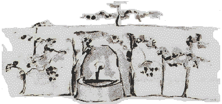
XXIV
Estis la oka tago ekde mia paneo en la dezerto, kaj mi estis aŭskultinta
la rakonto pri la vendisto, trinkante la lasta guto de
mia akvoprovizo:
"Ho," mi diris al la eta princiĉo, "viaj memoraĵoj ja estas beletaj,
sed mi ankoraŭ ne riparis mia aviadilo, mi havas nenio
plu por trinki, kaj ankaŭ mi estus feliĉa, se mi povus paŝi tute
malrapide al fontano!"
"Mia amiko la vulpo…" hi diris al mi.
"Mia etulo, ne temas plu pri la vulpo!"
"Kial?"
"Ĉar ni baldaŭ mortos pro soifo…"
Hi ne komprenis mia rezonado kaj respondis al mi:
"Estas bone, ke oni havis amiko, eĉ se oni estas baldaŭ mortonta.
Mi estas tre kontenta, ke mi havis amiko vulpo…"
"Hi ne taksas la danĝero," mi pensis. "Hi neniam malsatas, nek
iam soifas. Iom da suno sufiĉas al hi…"
Sed hi rigardis mi kaj respondis al mia penso:
"Ankaŭ mi soifas… ni serĉu puto…"
Mi gestis lacece: "Estas sensence serĉi puto hazarde en la
dezerta vastego." Tamen ni ekiris.
Post plurhora silenta marŝado, nokto falis kaj steloj eklumis.
Mi vidis ili kvazaŭ en sonĝo, iom febrante pro soifo. La vortoj
de la eta princiĉo dancis en mia memoro:
"Ĉu do vi ankaŭ soifas?" mi demandis hi. Sed hi ne respondis
al mia demando. Hi simple diris:
"Akvo povas esti bona ankaŭ por la koro…"
Mi ne komprenis hia respondo, sed mi silentis… mi bone
sciis, ke neniel utilus demandi hi.
Hi estis laca. Hi sidiĝis. Mi sidiĝis apud hi. Kaj post silento hi
daŭrigis:
"La steloj estas belaj pro iu floro, kiu oni ne vidas…"
"Certe," mi respondis kaj sen paroli mi rigardis la faldoj de
la sablo en la lunlumo.
"La dezerto estas bela…" hi aldonis.
Kaj estis vere. Mi ĉiam amis dezertoj. Oni sidiĝas al sur sabla
ondo. Oni vidas nenio. Oni aŭdas nenio. Kaj tamen io radias
en silento…
"Kio beligas dezerto," diris la eta princiĉo, "estas, ke ĝi ie kaŝas puto…"
Mi miris subite kompreni tiu mistera radiado de la sablo.
Kiam mi estis knabeto, mi loĝis en antikva domo, kaj legendo
rakontis, ke trezoro tie estis profunde enfosigita. Kompreneble,
neniam iu sciis malkovri ĝi, eble eĉ ne serĉis ĝi. Sed ĝi ensorĉis la tuta domo.
Mia domo kaŝis sekreto en la fundo de sia koro…
"Jes," mi diris al la eta princiĉo, "Ĉu temas pri domo, ĉu pri steloj,
ĉu pri dezerto, kio faras ilia beleco, estas nevidebla!"
"Mi estas kontenta, ke vi samopinias kun mia vulpo," hi diris.
Ĉar la eta princiĉo ekdormis, mi levis hi al en miaj brakoj kaj
denove ekiris. Mi estis emociata. Ŝajnis al mi, ke mi portas fragila trezoro.
Eĉ ŝajnis al mi, ke estas nenio pli fragila sur la
Tero. Mi rigardis en la lunlumo tiu pala frunto, tiuj fermitaj okuloj,
tiuj harbukloj, kiuj tremetis en vento, kaj mi
diris al mi: "Tio, kio mi vidas, estas nur la ŝelo. Kio plej gravas,
estas nevidebla…"
Ĉar hiaj duone malfermitaj lipoj ridetis, mi ankaŭ diris al mi:
"Kio tiom kortuŝas mi pri la dormanta princiĉeto, estas hia fideleco
al la floro, estas bildo de rozo, kiu radias interne de hi kiel flamo de
lampo, eĉ kiam hi dormas…" Kaj mi sentis, ke hi estas eĉ pli fragila.
Oni ja devas ŝirmi lampoj: ventblovo povas estingi ili…
Kaj tiel iranta, tagiĝe mi malkovris la puto.
XXV
"Homoj," diris la eta princiĉo, "enŝtopas si al en rapidvagonaroj,
sed ili ne plu scias, kio ili serĉas. Tiam ili agitiĝas kaj rondiras…"
Kaj hi aldonis:
"Ne indas…"
La puto, kiu ni atingis, ne similis al saharaj
putoj. Saharaj putoj estas nuraj truoj fositaj en
la sablo. Tiu ĉi similis al vilaĝa puto. Sed tie
estis neniu vilaĝo, kaj mi pensis, ke mi nur
sonĝas.
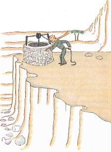
"Estas strange," mi diris al la eta princiĉo, "Ĉio estas preta: pulio,
sitelo kaj ŝnuro…"
Hi ridis, tuŝis la ŝnuro, ludigis la pulio. Kaj la pulio knaris
kiel malnova ventoflago, kiam vento longe dormis.
"Ĉu vi aŭdas?" diris la eta princiĉo, "ni ĵus vekis tiu puto, kaj
ĝi kantas…"
Mi ne volis, ke hi streĉiĝu:
"Lasu mi fari," mi diris, "tio tro pezas por vi."
Malrapide mi alsupre-tiris la sitelo ĝis la rando de la puto.
Tie mi tute stabiligis ĝi. En miaj oreloj daŭre sonis la kanto de
la pulio, kaj en la ankoraŭ tremanta akvo mi vidis tremetanta
suno.
"Mi soifas tiu ĉi akvo," diris la eta princiĉo, "donu al mi por
trinki!…"
Kaj mi komprenis, kio hi serĉis.
Mi levis la sitelo ĝis hiaj lipoj. Trinkante hi fermis siaj okuloj.
Tio estis dolĉa kiel festo. Tiu akvo ja estis io alia ol nura
nutraĵo. Ĝi estis naskita el vojirado sub steloj, el kanto de pulio,
el streĉo de miaj brakoj. Ĝi estis por la koro bona kiel donaco.
Kiam mi estis knabiĉeto, la lumo de la kristnaska arbo, la muziko
de la meznokta meso kaj la dolĉeco de la ridetoj, same donis
radiado al la kristnaska donaco, kiu mi ricevis.
"Homoj ĉe vi kulturas kvin mil da rozoj en unu ĝardeno," diris la eta princiĉo,
" …kaj tamen ili tie ne trovas, kio ili serĉas."
"Ili ne trovas tio," mi respondis.
"Kaj ja ili povus trovi, kio ili serĉas, en unu sola rozo aŭ en
iom da akvo…"
"Certe," mi respondis.
Kaj la eta princiĉo aldonis:
"Sed la okuloj estas blindaj, necesas serĉi per la koro."
Mi estis trinkinta. Mi spiris bone. Tagiĝe la ĉielo estis mielkolora.
Mi feliĉis ankaŭ pro tiu miela koloro. Kial do mi eksentis
angoro?
"Necesas, ke vi plenumu via promeso," dolĉe diris al mi la
eta princiĉo, kiu denove sidiĝis apud mi.
"Kiu promeso?"
"Vi scias… buŝumo por mia ŝafeto… mi estas respondeca pri
tiu floro!"
Mi elpoŝigis miaj skizoj. La eta princiĉo ekvidis ili kaj diris ridante:
"Viaj baobaboj iom similas al brasikoj…"
"Ho!"
Mi, tiel fiera pro miaj baobab-desegnoj!
"Pri via vulpo… la oreloj iom similas al kornoj… kaj estas tro
longaj!"
Kaj hi denove ridis.
"Vi estas maljusta, etulo, mi sciis desegni nenio krom fermitaj kaj malfermitaj boaoj."
"Ho, tio taŭgos," hi diris, "la infanoj scias."
Do mi desegnis buŝumo. Kaj, donante ĝi al hi, mi sentis korpremo:
"Vi havas projekto, kiu mi ne konas…"
"Sciu, ke morgaŭ estos la datreveno de mia falo al sur la Tero…"
Kaj post silento hi diris ankoraŭ:
"Mi falis proksime de ĉi tie…"
Kaj hi ruĝiĝis.
Denove, ne komprenante kial, mi sentis stranga angoro.
Tamen demando venis al en mia menso:
"Do, ne estis hazardo, ke vi promenis tute sola, mil kilometroj
malproksime de ĉiuj loĝataj landoj, tiam matene antaŭ ok tagoj,
kiam mi konatiĝis kun vi. Ĉu vi tiam estis reiranta direkte al via
falpunkto?"
La eta princiĉo denove ruĝiĝis.
Kaj hezite mi aldonis:
"Eble pro la datreveno?"
La eta princiĉo refoje ruĝiĝis. Hi neniam respondis al demandoj,
sed kiam oni ruĝiĝas, tio signifas "jes", ĉu ne?
"Ha!" mi diris al hi, "mi timas…"
Sed hi respondis al mi:
"Nun vi devas labori. Vi devas reiri al via maŝino. Mi atendos
vi ĉi tie. Revenu morgaŭ vespere!…"
XXVI
Apud la puto estis ruino de manova ŝtona muro. Kiam la sekvanta tago
vespere mi revenis de mia laboro, mi ekvidis de
malproksime mia eta princiĉo sidanta tie supre, kun kruroj
pendantaj. Kaj mi aŭdis hi paroli:
"Ĉu vi do ne memoras pri tio? Tio estis ne ĝuste ĉi tie!"
Alia voĉo sendube respondis al hi, ĉar hi kontraŭdiris:
"Jes ja! Jes ja! Ja estas la tago, sed ĉi tie ne estas la loko…"
Mi plue iris direkte al la muro. Mi ankoraŭ neniu vidis, nek
aŭdis. Tamen la eta princiĉo denove respondis:
"… Certe. Vi vidos, kie troviĝas sur la sablo la komenco de
miaj piedsignoj. Nur tie atendu mi. Mi estos tie ĉi-nokte."
Mi estis je dudek metroj de la muro kaj mi ja ankoraŭ nenio vidis.
Post silenta momento la eta princiĉo daŭrigis:
"Ĉu vi havas bona veneno? Ĉu vi estas certa, ke vi ne longe
suferigos mi?"
Mi haltis korpremite, sed mi ankoraŭ ne komprenis.
"Nun foriru!" hi diris… "Mi volas reiri al malsupre!"
Tiam mi mem ekrigardis la piedo de la muro kaj mi eksaltis!
Tie estis, leviĝanta kontraŭ la eta princiĉo, unu el tiuj flavaj
serpentoj, kiuj ekzekutas vi en tridek sekundoj. Penante elpoŝigi
mia revolvero, mi ekkuris, sed, aŭdante la bruo, la
serpento lasis si malrapide glitfali al en la sablo kiel malaperanta fonto kaj,
ne tro rapide, traŝoviĝis kun metala susuro inter ŝtonoj.
Mi alkuris al la muro ĝustatempe por kapti al en brakumo mia princa etulo, pala kiel neĝo.
"Kia afero! Nun vi parolas kun serpentoj!"
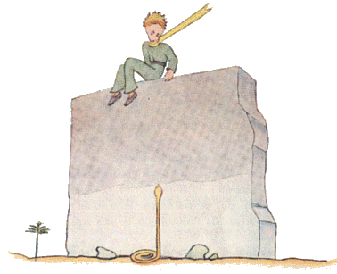
Mi demetis hia ĉiama orkolora fulardo. Mi malsekigis
hiaj tempioj kaj mi trinkigis hi. Kaj tiam mi ne plu kuraĝis demandi hi io ajn.
Hi rigardis mi grave kaj brakumis mia kolo. Mi sentis hia koro bati kiel koreto de pafita, mortanta
birdeto. Hi diris al mi:
"Mi estas kontenta, ke vi trovis tio, kio mankis al via maŝino. Vi povos reiri al hejme…"
"Kiel vi scias tio?"
Mi ja venis por anonci al hi, ke malgraŭ ĉiuj miaj malesperoj
mi sukcesis mia laboro!
Hi respondis nenio al mia demando, sed aldonis:
"Ankaŭ mi hodiaŭ reiros al hejme…"
Kaj melankolie:
"Estas multe pli malproksime… multe pli malfacile…"
Mi sentis, ke io eksterordinara okazas. Mi premis hi en miaj
brakoj kiel infaneto, kaj tamen ŝajnis al mi, ke hi glitas al sube
al en abismo kaj mi ne povas fari io ajn por reteni hi…
Hia rigardo estis serioza, perdiĝanta al en malproksimo.
"Mi havas via ŝafeto. Kaj mi havas la kesto por la ŝafeto.
Kaj ankaŭ la buŝumo…"
Kaj hi malgaje ridetis.
Mi longe atendis. Mi sentis, ke hi iom post iom revigliĝas.
"Vi timis, etulo…"
Hi timis, kompreneble! Sed hi dolĉe ridis:
"Mi ankoraŭ pli multe timos hodiaŭ vespere…"
Denove mi sentis mi frosta pro la konscio de io nekompensebla.
Kaj mi komprenis, ke mi ne povas eĉ pensi, ke mi neniam
plu aŭdos tiu rido. Ĝi estis por mi kvazaŭ fonteto en dezerto.
"Etulo, mi ankoraŭ volas aŭdi vi ridi…"
Sed hi diris al mi:
"En tiu ĉi nokto unu jaro estas pasinta. Mia stelo troviĝas super la loko,
al kie mi falis lasta jaro…"
"Etulo, ĉi tiu afero pri serpento kaj rendevuo kaj stelo estas
malbona sonĝo, ĉu ne?"
Sed hi ne respondis al mia demando. Hi diris:
"Kio estas grava, tio ne videblas…"
"Certe…"
"Estas kiel pri tiu floro. Se vi amas floro, kiu troviĝas sur iu
stelo, plaĉas al vi rigardi la ĉielo dumnokte. Ĉiuj steloj estas
florumitaj…"
"Certe…"
"Estas same kiel pri akvo. Tiu, kiu vi donis al mi por trinki,
estis kvazaŭ muziko pro la pulio kaj la ŝnuro… Vi memoras… ĝi
estis bongusta."
"Certe…"
"Nokte vi rigardos steloj. La mia estas tro eta, por ke mi
povu montri ĝi al vi. Estas pli bone tiel. Mia stelo estos por vi
unu el la steloj. Tial vi ŝatos rigardi ĉiuj steloj… Ili ĉiuj estos
viaj amikoj. Kaj krome mi donos al vi donaco…"
Hi denove ridis.
"Ha, etulo, etulo, mi amas aŭdi via rido!"
"Ĝuste ĝi estos mia donaco… estos kiel pri tiu akvo."
"Kio vi volas diri?"
"Homoj havas steloj, kiuj ne estas samaj. Por tiuj, kiuj vojaĝas,
steloj estas gvidantoj. Por aliaj ili estas nur malgrandaj lumoj.
Por aliaj, kiuj estas sciencistoj, ili estas problemoj. Por mia
negocisto ili estis oro. Sed ĉiuj tiuj steloj silentas. Vi mem havos
steloj, kiaj neniu alia havas…"
"Kio vi volas diri?"
"Kiam vi rigardos la ĉielo dumnokte, ĉar mi loĝos sur unu
el la steloj kaj ridos sur unu el ili, tiam estos por vi, kvazaŭ ĉiuj
steloj ridus. Vi havos steloj, kiuj kapablas ridi!"
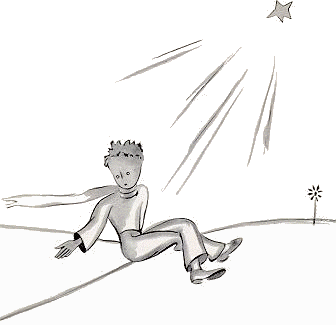
Kaj hi denove ridis.
"Post kiam vi konsoliĝos (oni ĉiam konsoliĝas), vi estos kontenta,
ke vi konis mi. Vi ĉiam estos mia amiko. Vi deziros ridi
kun mi. Kaj foje vi malfermos fenestro nur pro plezuro… Kaj
viaj amikoj miros vidi, ke vi ridas rigardante la ĉielo. Tiam vi
diros al ili: "Jes, la steloj ĉiam ridigas mi!" Kaj ili opinios, ke vi
frenezas. Kaj vi pensos, ke mi faris por vi sufiĉe aĉa ŝerco…"
Kaj hi daŭre ridis.
"Estos kvazaŭ, anstataŭ steloj, mi donus al vi amaso da
tintiletoj, kiuj kapablas ridi…"
Kaj hi denove ridis. Poste hi serioziĝis:
"Pri tiu nokto… sciu… Ne venu!"
"Mi ne forlasos vi!"
"Mi aspektos kvazaŭ sentanta doloro, kvazaŭ mortanta. Estas tiel.
Ne venu por vidi tio, ne indas…"
"Mi ne forlasos vi!"
Sed tio zorgigis hi:
"Mi diras tio al vi… ankaŭ pro la serpento. Nepre necesas,
ke ĝi ne mordu vi!… Serpentoj ja estas malicaj… Ili povas mordi pro sia plezuro…"
"Mi ne forlasos vi…"
Tamen io maltrankviligis hi:
"Estas vere, ke ili ne havas plu veneno por mordi duafoje."
Tiunokte mi ne vidis hi ekvojiri. Hi forkuris senbrue. Kiam mi
sukcesis atingi hi, hi estis iranta decideme per rapidaj paŝoj. Hi
nur diris al mi:
"Ha, vi estas ĉi tie…"
Kaj hi prenis mia mano. Sed hi denove maltrankviliĝis:
"Vi ne faras bone. Vi afliktiĝos. Mi ŝajnos morta kaj tio ne
estos vera…"
Mi mem silentis.
"Komprenu… Estas tro malproksime. Mi ne povas forporti
tiu ĉi korpo. Ĝi estas tro peza."
Mi mem silentis.
"Sed ĝi estos kiel malnova forlasita ŝelo. Malnovaj ŝeloj ne
estas malgajiga afero…"
Mi mem silentis.
Hi iom senkuraĝiĝis. Sed ankoraŭ streĉis siaj fortoj:
"Nu! Estos ĉarme. Ankaŭ mi rigardos la steloj. Ĉiuj steloj
estos putoj kun rustikaj pulioj. Ĉiuj steloj verŝos al mi por trinki…"
Mi mem silentis.
"Estos tiel amuze! Vi havos kvincent milionoj da tintiletoj,
mi havos kvincent milionoj da fontoj…"
Kaj hi ankaŭ eksilentis, ĉar hi ploris…

"Ĉi tie. Lasu mi paŝi solule!"
Kaj hi sidiĝis, ĉar hi timis.
Hi diris ankaŭ:
"Vi scias… pri mia floro… mi estas respondeca. Kaj ĝi estas
tiel malforta! Kaj tiel naiva! Ĝi havas nur kvar etaj dornetoj
por defendi si kontraŭ la mondo…"
Mi mem sidiĝis, ĉar mi ne plu povis teni mi staranta. Hi diris:
"Do… tio estas ĉio…"
Hi ankoraŭ iom hezitis, poste leviĝis. Hi paŝis unu paŝo. Mi
ne kapablis moviĝi.
Nur io flava fulmis apud hia maleolo. Hi restis senmova unu momento.
Hi ne kriis. Hi falis malrapide, kiel forhakita arbo.
Tio eĉ faris neniu bruo pro la sablo.
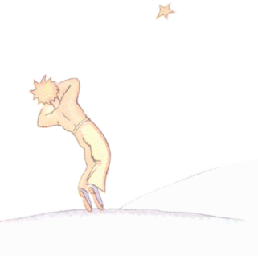
XXVII
Kaj nun, kompreneble, jam pasis ses jaroj… Mi ankoraŭ neniam rakontis tiu ĉi historio. La kamaradoj, kiuj revidis mi, estis ja kontentaj revidi mi vivanta. Mi estis malgaja, sed mi diris al ili: "Ja pro laciĝo…"
Nun mi konsoliĝis iom, verdire… ne tute. Sed mi ja scias, ke hi revenis al sur sia planedo, ĉar ĉe tagiĝo mi ne retrovis hia korpo. Ĝi ne estis tre peza korpo… Kaj mi ŝatas dumnokte aŭskulti steloj. Tio estas kvazaŭ tintus kvincent milionoj da tintiletoj…
Sed tamen io ne estas en ordo. Mi forgesis aldoni rimeno al la buŝumo, kiu mi desegnis por la eta princiĉo! Hi certe neniam povis ligi ĝi al la ŝafineto. Do, mi demandadas mi: "Kio okazis sur hia planedo? Eble la ŝafineto manĝis la floro…"
Foje mi diras al mi: "Certe ne! La eta princiĉo enfermas sia floro ĉiunokte sub ĝia vitra kloŝo kaj hi bone vartas sia ŝafeto…" Tiam mi estas feliĉa. Kaj ĉiuj steloj dolĉe ridadas.
Alifoje mi diras al mi: "Oni iam estas senatenta, kaj tio sufiĉas! Iuvespere hi forgesis la vitra kloŝo, aŭ dumnokte la ŝafineto eliris senbrue…" Tiam ĉiuj tintiletoj aliformiĝas al en larmoj!…
Jen estas tre granda mistero. Por vi, kiuj ankoraŭ amas la eta princiĉo (same kiel por mi), nenio en la universo estas sama, se ie ajn (oni ne scias kie) la ŝafeto, kiu oni ne konas, manĝis aŭ ne manĝis la rozo…
Rigardu la ĉielo! Demandu vi: ĉu, jes aŭ ne, la ŝafeto manĝis la floro? Kaj vi vidos, kiel tiam ĉio estas alia… Kaj neniu grandulo iam ajn komprenos, ke tio tiel gravas!
Tio ĉi estas por mi la plej bela kaj la plej malgaja pejzaĝo en la mondo. Ĝi estas la sama pejzaĝo, kiel la antaŭa, sed mi desegnis ĝi ankoraŭ unu fojo, por bone montri ĝi al vi. Tie ĉi la eta princiĉo aperis sur la tero… kaj malaperis.
Atente rigardu tiu pejzaĝo, por esti certa, ke vi rekonos ĝi, se vi iam vojaĝos en Afriko, en la dezerto. Kaj, se iam okazos al vi ke vi trapasas tie, ne rapidu — mi petas al vi! Atendu iom, ĝuste sub la stelo! Se tiam infano venos al vi, se hi ridos, se hi havos orkoloraj haroj, se hi ne respondos, kiam vi demandos hi io, vi ja divenos, kiu hi estas. Tiam estu bonaj! Ne lasu mi tiel malgaja: rapide skribu al mi, ke hi revenis…
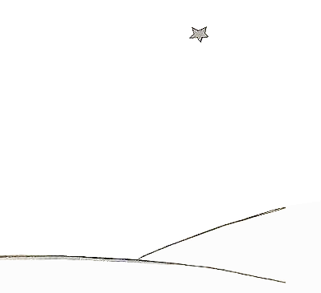